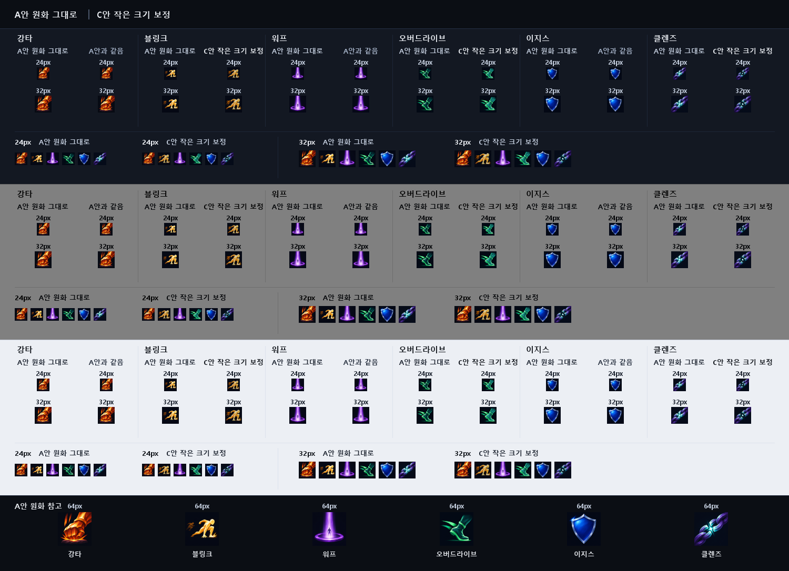
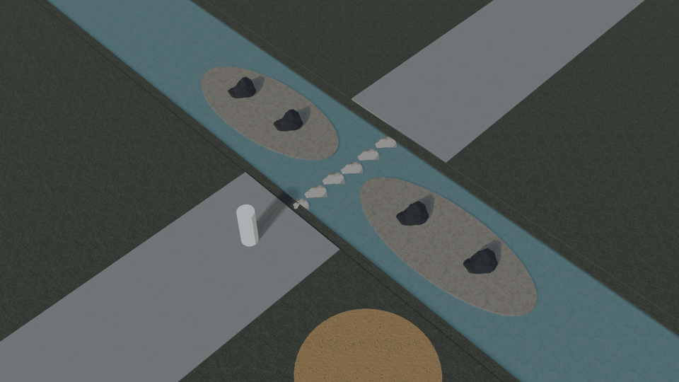
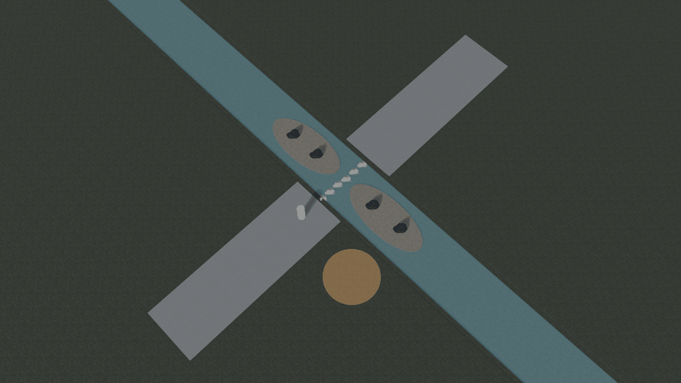

대표가 답하실 것2건
대표의 답을 기다리는 질문은 이 칸에만 둡니다. 실제로 답을 받은 항목만 완료·종결 탭으로 옮기며, 읽음 표시는 이 브라우저에만 남는 표시이고 답변이나 승인이 아닙니다.
[확인] 선수 능력치 41개를 경기에 넣는 시점 (11-27)1건
결정 필요선수 능력치 41개: 지금 개발 단계의 경기에 넣을까요, 다음 단계에 선수 자료와 함께 넣을까요
- 질문
- 대표께서 정하신 선수 능력치 41개(기량 34와 멘탈 7, 20점 척도)를 경기 계산에 쓰기 시작하는 때를 정합니다. 지금 경기는 선수마다 다섯 능력치를 받고, 그중 선수 판단에는 두 개(조작과 라인전)만 씁니다. 선수 자료도 20명의 다섯 능력치만 있습니다. 설계서는 기존 선수 자료를 41개로 옮기는 방법과 저장 형식·개발 단계의 변경을 따로 검토하도록 남겨 두었습니다.
- 추천안과 이유
- 지금 개발 단계의 경기는 다섯 능력치를 그대로 쓰고, 41개는 다음 개발 단계에서 선수 자료 41칸을 채운 뒤 경기 입력과 저장에 함께 넣는 안을 추천합니다. 41개의 실제 값이 아직 없어 지금 넣으면 다섯 능력치를 늘려 만든 임시 값이 되고, 지금 판단은 다섯 가운데 둘만 쓰므로 차이도 작습니다. 그 대신 지금 진행할 지침 값의 경기 반영을 늦추지 않습니다.
- 대안
- 지금 진행할 경기 입력 개정(선수 지침과 팀 전술을 싣는 개정)에 41칸을 함께 넣고, 값은 다섯 능력치에서 정한 규칙으로 임시로 채우는 안입니다. 경기 입력 형식을 한 번만 바꾸면 되지만, 임시 값은 설계서의 41개 뜻과 다르고 저장 형식 변환과 자료 규칙을 지금 만들어야 합니다.
- 플레이 차이
- 추천안이면 지금 경기에서 선수의 개성은 다섯 능력치와 개인 지침·팀 전술로 드러나고, 41개의 세부 차이(예: 갱 회피, 클러치, 절제력)는 다음 단계부터 경기에 나타납니다. 대안이면 41칸이 경기에 들어가지만 값이 다섯 능력치에서 늘린 임시 값이라, 선수끼리의 세부 차이가 실제 설계와 다르게 보일 수 있습니다.
- 구현·다른 설계 영향
- 추천안이면 경기 입력 형식을 이번 개정(지침)과 다음 단계(능력치)에 두 번 바꾸고, 저장 변환도 다음 단계에 합니다. 대안이면 형식 변경은 한 번이지만 선수 자료 41칸의 작성 규칙, 저장 형식 변환, 다섯 능력치와의 대응 규칙을 지금 만들어야 합니다. 경기 AI가 41개를 판단에 쓰는 연결은 어느 안이든 따로 만들어야 합니다.
- 결정 시점
- 선수 지침과 팀 전술을 싣는 경기 입력 개정을 확정하기 전입니다. 그 개정은 5001 경기 코드를 주 작업 가지로 옮긴 뒤에 하므로, 오늘 안에 정하시지 않아도 지금 진행 중인 일은 막지 않습니다. 답을 받기 전에는 형식을 확정하지 않습니다.
- 숫자 상태
- 41개(기량 34, 멘탈 7)와 20점 척도는 대표 결정이고, 다섯 능력치와 선수 20명은 지금 자료의 사실입니다. 새로 정하는 수치는 없습니다.
[확인] 전술 스펠 아이콘의 작은 크기 (11-27)1건
결정 필요전술 스펠 아이콘: 작은 칸에 원화 그대로(A안)와 작은 크기 보정안(C안) 가운데 어느 쪽을 쓸까요
- 질문
- 출전·관전 화면의 스펠 칸(24·32픽셀)에 쓸 아이콘을 정합니다. A안은 대표께서 주신 원화를 그대로 줄인 것이고, C안은 작은 크기에서 잘 읽히도록 블링크·오버드라이브·클렌즈 세 장만 손본 것입니다. 강타·워프·이지스는 두 안이 같습니다. 48픽셀 이상의 큰 그림은 두 안 모두 원화를 그대로 줄입니다.
- 추천안과 이유
- C안을 추천합니다. 이전 회차를 모르는 여섯 번째 독립 비평에서 C안은 치명·중간 결함 0건으로 통과했습니다(사소 7건). A안은 클렌즈가 작은 칸에서 끊긴 사슬로 보이지 않고 섬광이 밝은 매듭처럼 보이는 중간 결함 2건이 남았습니다. C안은 블링크의 인물과 오버드라이브의 장화도 작은 칸에서 더 잘 보입니다.
- 대안
- A안(원화 그대로)입니다. 원화의 선과 색을 가장 그대로 지키지만, 작은 칸에서 클렌즈의 끊긴 사슬이 한 줄로 이어져 보입니다.
- 플레이 차이
- 경기 규칙은 같습니다. 관전 화면의 스펠 칸에서 C안이면 클렌즈의 끊긴 사슬과 가운데 섬광이 작은 크기에서도 구별됩니다. A안이면 원화와 가장 가깝지만 클렌즈가 이어진 사슬로 읽힐 수 있습니다.
- 구현·다른 설계 영향
- 고르신 안을 UI 소스가 출전·관전 화면의 스펠 칸에 연결합니다. C안을 고르시면 남은 사소 결함(블링크의 머리와 팔 사이 틈, 오버드라이브 몸통의 밝기 등)은 연결과 따로 아트가 다듬을 수 있습니다.
- 결정 시점
- 스펠 칸을 화면에 연결하기 전입니다. 지금 진행 중인 일은 막지 않습니다.
- 숫자 상태
- 결함 수는 독립 비평의 판정이고, 밝기 비교 같은 계측값은 비평자가 잰 값입니다. 새로 정하는 경기 수치는 없습니다.


총괄이 정해 보고하는 것15건
총괄이 정한 항목입니다. 답이 없어도 이대로 진행합니다. 바꾸실 것만 알려 주십시오. 일이 끝났거나 뒤 카드로 대체된 보고는 완료·종결 탭으로 옮깁니다.
[보고] 총괄이 묶어 정한 기술 항목8건
총괄 결정 보고실제 5대5 경기가 관전 화면에 처음 이어졌습니다 (통합 가지, 독립 확인 전)
- 질문
- 통합·배포가 17:04에 알려 왔습니다. 코어가 실제로 계산하는 5대5 한 경기를 UE의 관전 화면에서 처음부터 끝까지 돌렸습니다(자체 실행). 전장(계약자 열 명, 드론, 구조물), 점수판, 양 팀 선수의 체력과 레벨과 부활 대기, 사건 목록, 속도 단추(일시정지, 1배, 4배, 16배)가 실제 경기의 값으로 움직입니다. 촬영한 경기는 26분 58초에 5 대 5로 끝났고 승리 알림까지 나왔습니다. 화면의 틀은 아직 예전 것입니다. 대표의 시안 디자인으로 옮기는 일은 UI 소스가 하고 있습니다. 선수 1~10이라는 이름은 표본 편성이고 경기는 실제 계산입니다.
- 추천안과 이유
- 총괄의 처리: 대표가 직접 여실 수 있는 실행 파일이 둘 준비됐습니다(18:40, 자리와 여는 법은 대화로 전함). 하나는 지금의 판단, 하나는 시험 기능(짧은 딜교환, 웨이브 처리)을 켠 판단입니다. 같은 시드의 실제 5대5가 1배속으로 열립니다. 코어의 표시 생산자는 주 가지에 있고 화면 연결은 통합 가지에 있습니다. 시험 기능의 가지가 확인을 거쳐 주 가지에 들어가면 통합 가지를 그 위에 맞추고 만들지 않은 역할의 확인을 받아 넣습니다.
- 대안
- 주 가지에 들어갈 때까지 기다렸다가 보여 드리는 방법도 있지만, 이번 주의 목표가 직접 보고 판단하시는 것이라 통합 가지에서 먼저 보실 수 있게 합니다.
- 플레이 차이
- 보이는 것은 기본 공격만 쓰는 열 명의 라인전과 처치와 구조물 파괴입니다. 스킬, 아이템, 정글 캠프, 시야 안개, 되감기는 없습니다. 총괄이 촬영 두 장에서 본 것: 글자가 겹치는 곳이 있고(가까이 선 계약자의 이름), 정글 포지션의 계약자는 정글이 아니라 미드 길이나 기지 근처에 있습니다(정글 캠프가 아직 경기에 없기 때문입니다). 플레이가 합리적인지는 대표가 보시고 판단하실 일입니다.
- 구현·다른 설계 영향
- 이번 주 목표(GOAL-01)의 첫 단계입니다. 보신 뒤의 지적을 받아 선수 판단과 화면을 고치는 반복을 시작할 수 있습니다.
- 결정 시점
- 기존 실행 파일은 먼저 열어 보실 수 있습니다. 다만 그 버튼은 선수 능력 85 대 75 편성입니다. 이번 112경기 측정에서 골라낸 두 경기는 80 대 80, 반응 시간 양쪽 200밀리초로 계산했습니다. 실측 입력을 통합 담당에게 넘겼으며, 현재 버튼에서 두 경기의 승자와 종료 시각이 그대로 재현된다는 뜻은 아닙니다.
- 숫자 상태
- 기존 85 대 75 두 편성에서, 지금의 판단은 26분 58초 레드 승(처치 5 대 5), 시험 기능을 켠 판단은 25분 5초 블루 승(처치 11 대 11)이었습니다. 통합 담당이 두 실행기의 1배속 진행·정상 종료를 실제 관전 창에서 확인했습니다. 두 편성 62,479틱, 선수 정보 624,810행 대조 차이 0이었습니다. 실행기 시험 11개를 통과했지만 이전 전체 화면 검사의 점수판 치수 한 건은 실패했습니다. 수정이 포함된 판본에서의 재검은 별도입니다. 선수 이름은 표본이고 경기는 실제 계산입니다.


총괄 결정 보고선수 판단: 드론 전투 규칙을 바꾸자 같은 112경기에서 달라진 것
- 질문
- 짧은 딜교환과 웨이브 처리 조건을 유지하고, 같은 선수·시드·진영의 경기끼리 비교했습니다. 총수는 한 경기 차이지만, 끝나는 방식이 바뀐 것은 아홉 쌍입니다. 아래 표의 각 행은 별개의 시점에 잰 112경기이며 서로 더하지 않습니다.
- 추천안과 이유
- 짧은 딜교환과 웨이브 처리는 기본으로 켜지 않습니다. 수치는 독립 대조했지만, 두 팀 능력이 같은 경기에서 접근·이탈과 막타 손실이 합리적인지는 직접 보고 판단할 일입니다.
- 대안
- 코어 파괴 총수만 보고 두 판이 비슷하다고 결론 내리지 않습니다. 양쪽 모두 기존 판단을 쓴 조건에서는 네 경기가 새로 코어 파괴로 끝났고, 양쪽 모두 웨이브 처리만 켠 조건에서는 다섯 경기가 새로 시간제한에 닿았습니다.
- 플레이 차이
- 관전할 입력은 결과를 보고 고르지 않고 첫 시드의 비반전 경기로 정했습니다. 두 팀 능력이 80 대 80이고 반응 시간도 200밀리초로 같습니다. 기본 판단은 60분 시간제한, 양쪽에 두 기능을 모두 켜면 27분 43초에 B팀이 이겼습니다. 기존 관전 버튼은 85 대 75이므로 같은 경기가 아닙니다.
- 구현·다른 설계 영향
- 이번 비교에서 바뀐 것은 반격, 표적 유지, 추격 한계와 차로 드론 종류별 표적 우선순위입니다. 이전에는 근접·원거리·공성 등의 순서를 뒀고 이후에는 차로 드론끼리 같은 순위입니다. 어느 한 변경이 승패를 뒤집었다고 단정할 수 없습니다.
- 결정 시점
- 지금 새로 답하실 것은 없습니다. 관전용 입력을 전달했으며, 같은 입력을 볼 수 있다는 확인과 실제 플레이 판단 전에는 기능을 채택하지 않습니다.
- 숫자 상태
- 조건당 16경기이며 앞서 따로 측정한 여덟 경기와 합산하지 않습니다. 기존 기준과의 비교에서 경기 입력은 같고 관측 설정과 빌드는 달랐습니다. 독립 검증은 모든 원시 기록과 전후 봉인 96개·95개를 대조하고 관전 후보 두 입력만 다시 실행한 것입니다. 112경기를 전부 새로 돌린 결과나 확정 밸런스가 아닙니다.
| 측정 시점 | 코어 파괴 | 60분 시간제한 | 무효 |
|---|---|---|---|
| 선수 인지 기록 보완 전 · 기존 독립 재측정 | 95 | 16 | 1 |
| 인지 기록 보완 후 · 기존 드론 전투 | 96 | 16 | 0 |
| 같은 경기 입력 · 반격·추격·표적 규칙 변경 후 | 95 | 17 | 0 |
두 판본의 112쌍을 독립 검증자가 원시 기록에서 다시 셌습니다. 입력 누락·중복은 없고, 양쪽에서 끝난 91쌍 중 43쌍의 승자가 바뀌었습니다.
총괄 결정 보고정글: 같은 순간의 완주와 처형에서 일부 지급을 막은 것 확인
- 질문
- 캠프 완주와 계약자 처형이 같은 순간에 겹치면 두 사건을 모두 기록할 수 있을 때만 경기 안에 보상을 반영합니다. 수정 전에는 한 자리만 남아도 골드가 먼저 늘었지만, 수정 후 독립 재현에서는 늘지 않았습니다.
- 추천안과 이유
- 이 부분 지급 반례는 닫았습니다. 선수의 자율 정글 사냥과 정식 경기 연결은 각각 결과가 나온 뒤 판단합니다.
- 대안
- 기본 공격 관전은 정글 연결과 분리해 계속합니다. 캠프가 보이는 것만으로 사냥·보상까지 완료됐다고 표시하거나, 일부 지급을 무시하고 정식 경기에 넣는 방식은 쓰지 않습니다.
- 플레이 차이
- 수동 지시로 한 캠프의 두 구성원을 잡아 보상을 한 번 받고 같은 경기를 재생했습니다. 같은 시험에서 지시가 없을 때 선수 스스로 중립을 공격한 횟수는 0이었습니다. 선수의 정글 동선·갱킹·관전 표지는 아직 이 결과에 포함되지 않습니다.
- 구현·다른 설계 영향
- 먼저 캠프 완주와 처형의 보상을 안전하게 정산한 뒤 선수의 정글 판단을 연결합니다. 캠프가 다시 뜨는 시각을 상대 팀이 어디까지 알 수 있는지는 별도 미결 규칙입니다. 몬스터 내부 상태를 선수의 관측에 노출하지 않습니다.
- 결정 시점
- 지금 새로 답하실 것은 없습니다. 정식 경기 연결과 선수의 사냥·동선, 관전 표시는 다음 단계입니다.
- 숫자 상태
- 시험 경기 60.350초에 사건 번호가 하나면 신규 보상·완주·처형 0, 두 개면 완주·처형 각 1회와 120골드였습니다. 캠프 없는 27사례와 수동·반전·무지시 세 경기의 상태·요약·재생 파일 9개도 이전과 같았습니다. 영구 구단 저장은 시험하지 않았습니다.
총괄 결정 보고지면 재질 시험(실사 스캔 여섯 종)이 눈가림 비평을 통과했습니다. 다음은 엔진 안의 석 장입니다
- 질문
- 11-25 13:15에 대표가 아트에 직접 주신 작업 명세(실사 스캔 에셋의 변환과 최적화)에 따라, 미드 구간의 강 건널목 둘레에 스캔 재질 넷(길, 정글 바닥, 캠프 마당, 강바닥 자갈)과 돌 둘(건너는 평석, 막는 자연석)을 입혀 관전 거리 둘에서 찍었습니다. 첫 그림은 만들지 않은 역할의 눈가림 비평에서 중간 2건이 나왔고(캠프 마당과 정글 바닥이 구별되지 않음, 자갈 위의 자연석이 그림자만 보임), 아트가 고쳐 다시 찍은 그림이 19:21에 통과했습니다(치명 0, 중간 0, 사소 0). 아래 두 장이 통과한 그림입니다. 답이 없어도 진행합니다. 고치실 곳이 있으면 말씀해 주십시오.
- 추천안과 이유
- 총괄의 처리: 이 그림으로 재질의 방향을 여쭙지 않고, 엔진 안에서 대표가 승인하신 조명과 연무(MAP-08) 아래 석 장을 찍은 뒤에 결정 카드로 여쭙겠습니다. 이 두 장은 엔진이 아닌 제작 도구에서 찍은 것이라 실제 화면의 빛과 다릅니다. 총괄이 두 장을 직접 본 소견: 구역은 색으로 잘 갈립니다. 다만 관전 거리에서는 스캔 재질의 무늬가 거의 보이지 않아 색을 칠한 면에 가깝게 읽힙니다. 스캔 재질을 쓰는 이득이 관전 화면에서 드러나는지는 엔진 안의 그림과 더 가까운 카메라에서 봐야 판단할 수 있습니다. 엔진에 넣을 때는 격리한 자리 안에서만 다루고 본 경로로 옮기는 일은 대표의 승인을 받은 뒤에 합니다. (21:01 갱신) 승인된 조명과 연무 아래의 엔진 화면 석 장을 준비합니다(통합·배포의 다음 작업). 재질의 방향은 그 화면을 보시고 정합니다. 제작 도구의 그림이 비평을 통과한 것은 실제 전투 효과까지 포함한 가독성의 승인이 아닙니다.
- 대안
- 지금 방향을 바꾸고 싶으시면 한마디 주십시오. 예: 무늬가 더 보이게, 색을 덜 진하게, 캠프 마당의 황토색을 다른 색으로, 스캔 재질을 쓰지 않고 칠한 면의 양식으로. 말씀이 없으면 엔진 안의 석 장까지 이 방향으로 갑니다.
- 플레이 차이
- 경기의 판정과는 무관합니다. 관전 화면에서 길, 정글 바닥, 캠프 마당, 강, 건너는 돌과 막는 돌이 한눈에 구별되는지의 문제입니다. 지금의 경기 판정에는 지형이 아직 없습니다.
- 구현·다른 설계 영향
- 아트가 재질의 값을 다듬고, 통합·배포가 엔진에 넣으며, 레벨이 승인된 조명으로 찍습니다. 이번 주의 5대5 관전(위에서 본 2D 전장)에는 영향이 없어 그 일들 뒤에 둡니다. 치수의 단일 원본이 놓인 뒤에 시작합니다.
- 결정 시점
- 지금 답하실 것은 없습니다. 엔진 안의 석 장이 나오면 재질의 방향을 결정 카드로 여쭙니다.
- 숫자 상태
- 재질의 밝기와 색 값은 모두 시험값입니다. 그림은 엔진이 아닌 제작 도구에서 찍었고 관전 거리는 31 m와 62 m입니다. 눈가림 비평은 그림 둘과 그레이박스 레퍼런스 둘, 기준만 보았고 만든 쪽의 계측 값은 보지 않았습니다. 과금이 붙는 생성은 0건이며, 스캔 원본과 가공본은 배포처의 조건에 따라 저장소에 넣지 않고 격리한 자리에만 둡니다(조건의 확인은 아트의 자체 확인입니다). 총괄은 두 장을 줄인 그림으로 봤습니다.




총괄 결정 보고스킬 실행부의 단계 설계 초안: 자료의 층부터 시작했습니다 (관전에는 뒤에 넣습니다)
- 질문
- GOAL-01의 답(18:48)대로 이번 주의 관전은 기본 공격만으로 가고, 스킬은 설계와 실행부를 이번 주에 시작합니다. 총괄이 스킬을 경기에 잇는 순서를 설계 초안으로 냈습니다. 스킬의 문법(무엇을 고르고, 어떻게 전달하고, 어떤 효과를 주는가)은 계약 문서에 이미 있고 경기 상태에도 자리가 있지만, 당시에는 코드에 그 문법의 형부터 없었습니다. 자료 층의 독립 검사에서 효과량·시간의 합과 해제 설정 세 가지가 잘못 받아들여졌습니다. 수정본의 독립 재확인 전에는 스킬을 경기에 연결하지 않습니다. 새 규칙이나 새 수치를 정하는 문서가 아니며 답이 없어도 진행합니다. 고치실 곳이 있으면 말씀해 주십시오.
- 추천안과 이유
- 총괄의 처리: 일곱 단계로 나눕니다. S1 문법의 형과 카탈로그의 검증(경기에 닿지 않음) → S2 한 순간에 맞는 단일 표적 스킬(선딜, 발사 때 마나와 쿨타임 확정, 스킬 포인트) → S3 날아가는 전달체 → S4 상태 효과와 군중 제어, 보호막과 지속 피해를 경기에 잇기 → S5 지대와 이동기 → S6 AI가 스킬을 쓰기 → S7 관전 화면에 넣기. S1은 19:29에 경기 AI에 맡겼습니다. S2부터는 경기 코어가 드론 반격, 보호막의 보완, 정글 1단계 뒤에 맡습니다. 단계마다 스킬이 없는 편성의 경기 결과가 앞과 같다는 것을 시험으로 고정합니다. 이번 주의 관전과 지금까지 잰 경기가 스킬 작업에 흔들리지 않게 하기 위해서입니다.
- 대안
- 순서를 바꾸고 싶으시면 한마디 주십시오. 예: 정글보다 스킬을 먼저, AI가 스킬을 쓰는 단계를 앞으로. 전술 스펠과 각성, 아이템의 발동 효과는 S4와 S5가 선 뒤에 같은 문법으로 얹으며 이 일곱 단계에는 넣지 않았습니다.
- 플레이 차이
- 이번 주에 보시는 경기에는 차이가 없습니다. 스킬이 화면에 나오는 것은 S6(AI가 씀)과 S7(관전에 넣음) 뒤이며, 그 채택은 대표가 보고 정하십니다.
- 구현·다른 설계 영향
- 계약자의 스킬 자료가 아직 없습니다(외부 입력 대기). 실행부는 어떤 계약자의 값도 아닌 표본 한 벌로 만들고 시험합니다. 받은 기획 묶음은 일괄 승인본이 아니고 M1의 열 명이 확정돼 있지 않아, 실제 자료를 받을 준비가 된 때(S2)에 열 명과 키트의 기준본을 카드로 여쭙겠습니다. 계약 문서의 빈 곳 여섯(스킬 포인트와 랭크의 규칙, 행동 가능 표와 실패 사유의 값, 사건의 순서, 스킬의 원시 사건, 귀환 중 피해, 전술 스펠의 번호)은 총괄이 S2 전에 메웁니다. 그 가운데 새 수치가 필요한 것은 여쭙니다. (21:01 갱신) 자료의 상태는 셋으로 나눠 봅니다. 계약자 기획 문서는 있습니다(받은 기획안 40명을 계약자 도감 탭에 옮겼습니다). 엔진 실행용 카탈로그의 입고와 검증은 별도입니다. M1의 열 명과 키트 기준본의 선정은 별도이며, 고를 단계가 되면 구성안과 선정 이유를 올립니다. 단계의 순서는 그대로이고, 앞 단계에서는 시전과 반격과 관측과 사건 기록의 공통 연결부를 확인합니다. 계약의 빈 곳 여섯 가운데 셋을 적었습니다(스킬 포인트와 랭크는 SKILL-02, 실패 사유의 값, 귀환의 중단은 RULE-08).
- 결정 시점
- 지금 답하실 것은 없습니다.
- 숫자 상태
- 새 수치는 없습니다. 지금의 사실(문서, 코드, 자료에 무엇이 있고 없는가)은 읽기 전용 조사 한 번에 기댔고 총괄이 줄마다 다시 대조하지 않았습니다. 단계마다의 작업량과 성능의 추정은 없습니다.
총괄 결정 보고스킬 포인트와 랭크의 M1 기본값을 적었습니다 (보정 C-65)
- 질문
- 스킬 실행부의 다음 단계는 스킬의 랭크를 올리는 규칙이 있어야 만들 수 있는데, 문서에 그 문장이 없었습니다(습득 계획표와 수치 곡선의 종류만 있음). 받은 계약자 기획안이 쓰는 모양을 M1 기본값으로 적었습니다. 답이 없어도 이대로 진행합니다. 고치실 곳이 있으면 말씀해 주십시오.
- 추천안과 이유
- 총괄의 처리(규칙 명세 4.6절): 스킬 포인트는 레벨 1에 1개, 그 뒤 레벨이 오를 때마다 1개입니다(한 경기에 최대 18개). Q, W, E는 최대 5랭크, R은 최대 3랭크입니다. R의 랭크는 6, 11, 16레벨부터 올릴 수 있습니다. Q, W, E의 랭크는 1, 3, 5, 7, 9레벨부터 차례로 올릴 수 있습니다. 습득은 편성이 낸 습득 계획표를 따르고, 이 조건을 어긴 계획표는 편성 단계에서 거부하며, 비워 둔 칸의 포인트는 쓰지 않고 남깁니다.
- 대안
- 일반 스킬의 레벨 조건을 두지 않는 안(5레벨에 한 스킬을 5랭크까지 올릴 수 있음), 궁극기의 레벨을 다르게 두는 안. 받은 기획안에는 5랭크와 3랭크, 1레벨부터 18레벨까지만 적혀 있고 레벨 조건의 문장은 없습니다.
- 플레이 차이
- 이번 주에 보시는 경기에는 차이가 없습니다(스킬이 아직 경기에 없습니다). 스킬이 들어오면 초반에 한 스킬만 끝까지 올리는 성장은 막히고 궁극기는 6레벨부터 나옵니다.
- 구현·다른 설계 영향
- 스킬 실행부의 습득 처리와 습득 계획표의 검증을 이 규칙으로 만듭니다. 기획안 두 편에 적힌 추천 습득 순서는 이 조건을 지킵니다(총괄이 손으로 확인).
- 결정 시점
- 지금 답하실 것은 없습니다. 그 단계를 배정하기 전에 고치시면 다시 만드는 일이 없습니다.
- 숫자 상태
- M1 기본값(시험값)이며 확정이 아닙니다. 5랭크와 3랭크, 1레벨부터 18레벨, 궁극기의 6·11·16레벨은 받은 기획안의 서술과 추천 순서에서 가져왔습니다. 일반 스킬의 레벨 조건은 기획안에 문장이 없어 같은 장르의 통례에서 가져온 것입니다. 공개 자료에서 문장으로 확인한 것은 포인트가 레벨마다 1개이고 궁극기가 6, 11, 16레벨이라는 것까지이며, 일반 스킬의 조건은 원문 문장을 확인하지 못했습니다.
총괄 결정 보고귀환의 중단: 지금 경기가 쓰는 값을 M1 기본값으로 적었습니다 (보정 C-67)
- 질문
- 귀환(8초, 이클립스를 가진 동안 4초)이 무엇으로 끊기는지를 정한 문장이 문서에 없었습니다. 지금 보시는 경기는 표본 설정으로 적의 피해를 받으면 끊기게 돌고 있습니다. 그 값을 M1 기본값으로 적었습니다. 답이 없어도 이대로 진행합니다.
- 추천안과 이유
- 총괄의 처리(규칙 명세 10.1절): 귀환은 적이 준 0보다 큰 피해를 받으면 끊깁니다. 그 계약자의 새 오더와 사망도 귀환을 끝냅니다. 끊긴 귀환은 처음부터 다시 시작합니다.
- 대안
- 피해를 받아도 끊기지 않는 안(코드에 선택지로 이미 있습니다). 군중 제어가 귀환을 끊는지는 군중 제어가 경기에 들어오는 단계에서 정합니다.
- 플레이 차이
- 지금 보시는 경기와 같습니다. 끊기지 않는 안으로 바꾸면 맞으면서도 귀환이 되어 추격의 가치가 줄어듭니다.
- 구현·다른 설계 영향
- 선수의 귀환 판단과 딜교환 뒤의 추격이 이 규칙에 기댑니다. 아이템 구매가 경기에 이어지지 않았으므로 귀환의 가치는 회복과 생존까지만 확인된 것입니다.
- 결정 시점
- 지금 답하실 것은 없습니다.
- 숫자 상태
- 새 수치는 없습니다(8초와 4초는 맵 명세의 기존 값). 끊기는 조건은 M1 기본값이며 확정이 아닙니다.
총괄 결정 보고계약자 병과 배정 초안: 40명에게 병과를 하나씩 붙였습니다 (부병과 없음, 신규 제안 1개)
- 질문
- 21:09의 말씀대로 병과 기획서를 이어 썼습니다. 설계서의 병과 16개에 계약자 40명을 하나씩 배정했고(부병과는 쓰지 않습니다), 기존 정의로 설명되지 않는 한 명을 위해 신규 병과 하나를 제안했습니다. 계약자 도감 탭의 병과 구역과 계약자마다의 줄에 올렸습니다. 답이 없어도 초안으로 두며 확정으로 올리지 않습니다. 고치실 배정이 있으면 계약자 이름과 병과만 말씀해 주십시오.
- 추천안과 이유
- 총괄의 초안(병과와 인원): 중장갑 브루저 4, 돌격형 브루저 4, 결투형 스커미셔 3, 파수꾼 탱커 2, 스탠딩·제어형 메이지 4, 누커 메이지 1, 포킹 메이지 1, 전투 메이지 4, 암살자 2, 하이퍼캐리 원딜 4, 캐스터·기동형 원딜 4, 유틸형 원딜 1, 포격형 원딜 1, 인챈터 4, 캐처 1. 선봉대 탱커와 스페셜리스트에는 해당하는 계약자가 없습니다. 신규 제안은 포격형 원딜 하나이며 힐다를 두었습니다. 배정은 피해를 내는 주된 방식, 교전에서 맡는 일, 거리와 접근 수단의 순서로 보았고 포지션은 근거로 쓰지 않았습니다.
- 대안
- 신규 병과를 더하지 않는 안(힐다는 캐스터·기동형 원딜, 병과 16개 그대로). 두 병과에 걸친 계약자에게는 차점을 함께 적어 두었으니 그쪽으로 옮기실 수 있습니다.
- 플레이 차이
- 지금 보시는 경기에는 차이가 없습니다. 병과는 선수의 병과 숙련(같은 병과의 다른 계약자를 익히기 쉬움)과 출전 화면의 표시에 쓰일 자료이며 아직 경기와 숙련에 이어져 있지 않습니다. 부병과를 없앴으므로 성격이 섞인 계약자는 둘째로 가까운 병과의 숙련 전이를 받지 못합니다.
- 구현·다른 설계 영향
- 계약자가 한 명뿐인 병과가 다섯(누커 메이지, 포킹 메이지, 유틸형 원딜, 포격형 원딜, 캐처)이라 그 병과의 숙련은 전이할 상대가 없습니다. 교전을 여는 것이 운용의 중심인 탱커가 40명의 기획안에 없다는 것이 보였습니다(코발트, 브룬힐트, 바쿠, 진소우가 차점으로 닿습니다). 로스터의 빈 곳인지 의도인지는 대표가 보실 일입니다. 병과의 자료 형식과 숙련 수치는 이 초안이 정하지 않습니다.
- 결정 시점
- 지금 답하실 것은 없습니다. M1의 열 명을 고르는 단계에서 병과를 계약자 자료에 싣기 전에 교정해 주시면 됩니다.
- 숫자 상태
- 새 수치는 없습니다. 배정 40건의 확신은 높음 13, 보통 21, 낮음 6입니다. 낮음은 스킬을 아직 받지 못한 확장 지역의 계약자이며 개요 문장만 보고 붙였습니다. 미카엘은 최초 원안을 기준으로 붙였습니다.
[보고] 검토 의견(보고 26건)에 대한 항목별 답 (11-25)7건
총괄 결정 보고검토 의견(보고 26건)의 답 0: 기준, 유지하는 것, 따로 여쭐 선택 아홉
- 질문
- 11-25 16:36에 받은 검토 의견(총괄 결정 보고 26건과 후속 현황의 대조)에 대한 답입니다. 새 승인이 아니라 검토 의견으로 받았습니다. 작업 여섯(①~⑥)의 답은 뒤의 카드 여섯 장(REVIEW-01부터 REVIEW-06)에 항목마다 현재 적용 기준, 근거 문서와 판, 구현 반영 위치, 검증 방법과 결과, 남은 미결의 다섯 칸으로 적었습니다. 카드와 목록의 옛 문장 44곳은 이 게시에서 지금의 기준으로 바꿨고, 고치기 전의 경위는 각 카드의 끝에 변경 이력으로 옮겼습니다.
성격과 기준 시각: 11-25 16:36에 전달받은 글은 14:58 기준 현황판(보고 26건 시점, 15:26에 VIEW-01이 더해져 현재 보고 27건)과 15:00 RULE-05 추가 보고에 대한 서면 대조·산술 검토 의견입니다(1차 의견 검토와 재반론 전달 완료, 2차 재답변은 서비스 오류로 미수신). 새 승인이나 수치 확정이 아니며, 14:58 뒤에 이미 처리된 항목은 재작업하지 않고 아래에서 그 뒤 처리됨으로 반영 위치와 검증 근거를 이어 닫습니다.
검토 1절의 기존 결정·완료 범위 네 가지 유지:
1. M1 개발 테스트 인원과 밴: M1은 계약자 10명·밴 없음(확정값)을 유지합니다. 우선 제작 20명 추천과 정식 출시 60명 추천은 별도이며, '20명 풀·팀당 2밴'을 현행 M1 기준으로 쓰지 않습니다(BASE-02, 13:19 답변 완료).
2. 정규 리그 형식(LEAGUE-01 선택지 A): 8구단 두 바퀴 풀리그, 모든 시리즈 3전 2선승, 구단당 14시리즈(28~42세트, 확정값) 승인 기록을 유지하며 플레이오프·승강·국제대회나 미확정 운영 세부(주당 2시리즈·동률 규칙은 시험값)까지 확대한 것으로 쓰지 않습니다(그 뒤 처리됨: 일정 생성기·순위표가 독립 검증 치명 0·중간 0·사소 2를 거쳐 16:12 주 가지 반영).
3. 우물 거래·능력치 합성 코어 모듈: 계약 문장 기반 독립 대조(31사례 47단계, 구현 결함 0)와 전체 검증 통과 뒤 13:22 주 가지 반영을 그 범위의 완료로 유지하며, 자연 경기에서 AI가 조합 아이템을 구매·판매하는 판단과 정식 아이템 목록은 별도 미결로 분리 관리합니다.
4. 아트 생성 방침: ART-01-KEY 종결과 신규 유료 모델 생성 중지 방침을 유지합니다(남은 크레딧 28 측정값, 과금 호출 0).
카드에 없던 여섯 표현의 대조 결과: 검토 글이 인용한 '16칸 부족', '32건 전부 기술 판정', '성능 불변', '빠른 막타 → 웨이브 역상', '영구 거래 교착', '반경 80 이상이면 전부 길막'의 여섯 문장은 현황판 카드와 문서 원문에 없었습니다. 각 항목에서 그 사실을 밝히고, 그렇게 읽힐 여지가 있던 옛 문장은 어디를 어떻게 고쳤는지 적었습니다.
변경 이력 분리 원칙: 카드 앞부분 본문은 모두 현재 적용 기준으로 바꾸고, 과거 단계의 수정 경위는 카드 끝의 별도 변경 이력 문장으로 분리했습니다. - 추천안과 이유
- 총괄의 처리: 원고(고침 44곳과 항목별 답 40건)는 현황 문장 역할이 썼고, 총괄은 고침 넷(DELEG-02의 2번, DELEG-03의 6번, RULE-07의 8번, RULE-02의 추천)을 원 카드와 견주고 답 넷(②-2, ③-0, ③-2, ⑥-1)을 읽어 맞음을 확인했습니다. 나머지는 원고를 쓴 역할의 자체 대조이며 총괄이 줄마다 읽지 않았습니다. 두 경기의 기록으로 열여섯 경기의 원인을 단정해 적은 것(JUDGE-01의 덧붙임과 SIM-03)은 총괄의 잘못이며 고쳤습니다.
- 대안
- 여쭙는 것이 없는 보고입니다. 답이 틀렸거나 모자란 곳은 항목 번호(예: ③-2)로 짚어 주시면 그 항목을 고칩니다.
- 플레이 차이
- 아래 아홉 항목은 실제 플레이 양상이나 전투·경제 규칙을 새로 바꾸는 선택이므로 이번 본문 정리에서 임의로 정하지 않고, 해당 단계 앞에서 반박 검토와 함께 따로 결정 카드로 여쭙니다.
1. 설화 E와 오로라 각성의 상호작용: 고정 6,000ms·스킬 가속 미적용(시험값)으로 정의된 기본 스킬에 오로라 각성의 정액 0.5초(확정값) 차감을 허용할지, 또는 별도의 최소 전환 잠금을 둘지.
2. 플레어 각성의 적응형 판정 기준(7 대 4): 현재 총괄 위임 시험 결정(RULE-07 2번, 시험 표본 경계 유지)으로 둔 '추가 공격력 × 7 대 주문력 × 4' 통일 기준을 정식 규칙으로 확정할지 되돌릴지.
3. 장거리 순간 이동 시 유도탄 처리와 수명 상한: 워프 등으로 멀리 이동한 대상의 기발사 유도탄을 소멸시키는 규칙이나 유도탄 비행 수명 상한을 새로 둘지(RULE-05 플레이 차이 칸, BASE-02 답변 5번).
4. 우물 거래 시 체력 보정·일괄 교체 도입 여부: 현행 '현재 체력 = min(거래 전 현재 체력, 새 최대 체력)' 대신 체력 비율·증분 보정이나 일괄 교체 거래를 도입할지(DELEG-05 2번 대안).
5. 방호벽 마지막 칸 보상과 지역 보상 예외: 14:00 전 1차 포탑 파괴 시 다섯째 방호벽 칸 125G를 미지급으로 바꿀지(RULE-02 대안), 반경 1,200unit 밖 막타·기여자에게 지역 보상 예외를 둘지(RULE-04 대안).
6. RoleQuest의 대표 설계 질문 4건: 19·20레벨 상대 처치 경험치, 따라잡기 경험치 계산의 레벨 상한, 정글 특전을 고르는 주체, 미드 오브젝트 점수의 관여 범위.
7. 묵청하 Q/W 외곽 판정 기준: 태허주 기획안이 후속 상세화로 남긴 Q/W 외곽 판정을 중심점 거리로 유지할지 피격 반경 접촉 기준으로 바꿀지.
8. JUDGE-01 시험 기능의 기본 활성화와 수치 확정: 짧은 딜교환 분리와 웨이브 처리 정책을 정식 기본값으로 켤지와 각 문턱·잠금 시간 수치(시험 측정과 독립 재측정 결과 확인 뒤 결정).
9. 오로라 시드 회복의 정산 방식 변경 여부: 현행 5초 배수 절대시각 이산 회복을 다른 주기 정산 방식으로 바꾸려는 경우. - 구현·다른 설계 영향
- 현황판 밖에 남은 일: 기술 부록의 한 문서에 OD-08과 OD-10을 대기로 적은 옛 목록 세 줄이 남아 있어 총괄이 정본에서 고칩니다. 승인 내용이 계약 문서 본문에 빠짐없이 들어갔는지의 전수 대조, 묵청하의 외곽 판정 문안의 교체도 총괄의 일로 남깁니다. 확인하지 못한 것은 항목마다 남은 미결 칸에 적었습니다.
- 결정 시점
- 여쭙는 것은 없습니다.
- 숫자 상태
- 원고는 17:01 기준으로 썼습니다. 그 뒤의 큰 변화는 셋입니다: 17:04에 실제 5대5가 관전 화면에 이어짐(VIEW-02), 17:33에 시험 기능 둘의 112경기 측정(JUDGE-02), 17:33에 컴파일 메모리의 원인 확인. 해당 카드의 이 칸에 한 줄씩 적었습니다.
목록(다음 단계, 아직 안 된 것, 검증 기록)에서 고친 줄의 변경 이력: 12:58 배정 직후에는 임시 상한 3으로 측정하며 빌드 도구 반영이 진행 중이었습니다. 11-22 오전 기록 당시에는 계약 보정과 우물 거래 코어 모듈의 구현·병합 전이었습니다. 앞선 요약 문장은 다른 문서가 이미 정한 갈래를 빼고 기술 판정과 설계 질문 넷의 두 갈래처럼 적었습니다. 15:26 게시 당시에는 코어 선언 커밋과 2D 전장 1단계 자체 완료 전이어서 시작 대기로 적었습니다. 15:00 게시 당시에는 시드 넷 둘째 측정이 경기 AI의 자체 실행 단계였고 독립 재측정 완료 전이었습니다. 14:58 게시 당시에는 총괄이 보고서 본문을 읽기 전이어서 회복·안전 우선의 네 단계 구분 없이 까닭 미확인으로만 적었습니다. 13:41 기록 뒤로 14:56 셋째 수정본 불합격, 결함 일곱 원인 분석 뒤 16:03 넷째 수정 배정(16:35 대기), 15:57 넷째 촬영 눈가림 비평 통과와 16:27 기지 쪽 입구 추가 지시가 반영되지 않았었습니다. 11-22 오전 기록 당시에는 계약 보정(12:09, 12:42), 상태 판 5 주 가지 병합(11-25 13:22), BASE-02 종결(13:19) 전이었습니다. 11-25 12:20 게시 당시에는 셋째 촬영 그림 여덟 장의 눈가림 비평 전이었습니다.
총괄 결정 보고검토 의견(보고 26건)의 답 ①: 보고 본문을 최신 기준으로 정리하고 승인 범위를 연결
- 질문
- ①-1 PLAN-01·PLAN-02의 선수 데이터 해석과 스태프·연구 저장 확장 문장
현재 적용 기준: 기존 계약과 저장의 선수 모델에는 기본 능력치 5개(0~100 척도, 확정값)와 선택적으로 켜는 확장 능력치 20개(확정값), 현재 능력·잠재 능력 칸이 있으며, 지금 경기 코어가 읽는 것은 기본 5개 가운데 둘(메카닉, 라인전)뿐입니다. 선수·전술 통합 설계서 v1.3의 20점 척도 능력치 41개(기량 34·멘탈 7, 상황형 셋은 10 중립, 확정값)와는 의미·현재/잠재 구분·척도가 달라 대응을 먼저 정합니다. 저장 구획 확장은 지원 목록 밖의 실제 월드 상태가 생겼을 때의 규칙이며, 스태프·연구 전달본은 기존 필드와 식별 구조를 먼저 쓰라고 정합니다.
근거 문서와 판: 공통 계약 문서(기술 부록 01, 1.2-final-r2), 정산·저장·리플레이 계약 문서(기술 부록 05, 1.2-final-r2), 선수·전술 통합 설계서 v1.3, 연구·스태프 확정 추가 전달본(11-22자), 카드 PLAN-01·PLAN-02·PLAYER-01~09·STAFF-01~09.
구현 반영 위치:
- 문서 정리: 현황판 카드 PLAYER-01~09·STAFF-01~09 반영 완료(14:30), PLAN-01 가·나 본문과 PLAN-02 본문의 옛 문장('능력치 다섯뿐', '스태프·연구는 저장 확장이 먼저')을 현행화하고 PLAN-01 숫자 칸의 중복 정정문을 이력으로 분리.
- 모듈 시험 통과: 기존 5+20 선수 저장·계약 코덱 시험 통과 상태 유지(41스탯 코덱은 미구현).
- 주 가지 반영: 기존 5+20 계약·저장만 주 가지 반영 완료(41스탯·스태프·연구는 미반영).
- 자연 경기 연결: 코어는 기본 5개 중 메카닉(반응 지연)·라인전(막타 편향) 2개만 읽으며 41스탯은 미연결.
- AI와 밸런스 검증: 41스탯 미실행.
검증 방법과 결과: QA A가 14:13 독립 대조(카드 24장 192칸)에서 치명 3·중간 14·사소 1을 검출했고 총괄이 계약·설계서 원문을 직접 대조해 확인했습니다(독립 확인 완료, 고친 카드 글의 재대조 BRD-01은 대기).
남은 미결: 기존 5+20과 새 41스탯의 의미·현재/잠재·척도 대응 계약, 스태프·연구 중 실제 새 월드 상태가 필요한 항목의 저장 구획 설계, 고친 결정 카드 문안의 독립 재대조(BRD-01).
①-2 OPS-05의 코어 동시 작업 수와 메모리 기준 정리
현재 적용 기준: 빌드 도구의 현행 기준은 코어 동시 2, UBT 동시 3, 셰이더 워커 2, 잠금 획득 후 빌드 직전 가용 메모리 14 GB 확인(대기 최대 15분, 모자라면 거절하며 빌드하지 않음, 모두 시험값)입니다.
근거 문서와 판: 카드 OPS-05 13번·숫자 상태 칸, 반례 VER-02, 미완료 목록의 작업 장비·메모리 항목.
구현 반영 위치:
- 문서 정리: OPS-05 숫자 상태 칸('동시 컴파일 3')과 미완료 목록('도구에 넣는 수정은 통합·배포가 하는 중')의 옛 문장을 코어 동시 2 기준과 16:23 잠금 재작업 상태로 정리.
- 모듈 시험 통과: 통합·배포의 빌드 상한 반영(14:29) 및 검증 명령 메모리 관문 시험 43건 통과(14:44, 자체 실행). 그 뒤 처리됨(나빠진 항목): 15:45 잠금 수정본은 자체 시험 45건을 통과했으나 16:23 QA A 독립 확인에서 불합격(치명 5, 중간 3). 컴파일러별 메모리 관문은 16:48 무렵 자체 실행 커밋 완료(독립 확인 전).
- 주 가지 반영: 코어 동시 2와 시작 전 14 GB 관문은 14:29·14:44 주 가지 반영 완료, 잠금 재작업은 미반영.
- 자연 경기 연결: 해당 없음(제작·검증 도구).
- AI와 밸런스 검증: 해당 없음.
검증 방법과 결과: 14:40 통합·배포 자체 실행에서 코어 동시 2로 전체 검증(두 컴파일러 각 실행 파일 98개·시험 1,046건, 파이썬 155건) 통과, 한 번의 측정값으로 최저 여유 9.02 GB·최대 소비 7.01 GB 확인. 16:23 QA A 독립 확인에서 죽은 잠금 동시 복구·직접 진입 스크립트 셋 미잠금 등 치명 5·중간 3 검출(VER-02).
남은 미결: 운영체제 자동 해제 및 직접 진입점 잠금을 포함한 잠금 재작업과 QA A 독립 재확인(VER-02), 컴파일러별 관문의 독립 확인, 3.5 GB 초과 번역 단위 19개의 원인 조사.
①-3 DELEG-02의 다전제 1세트 진영 선택과 정규 리그 일정 연결
현재 적용 기준: 진영 선택권을 가진 구단(1세트는 홈 구단, 2세트부터는 직전 세트 패배 구단, 확정값)이 선발 단계에서 블루·레드를 직접 고르며, 고르지 않고 선발을 마치면 선택권 구단이 블루가 됩니다(M1 한정 시험값). 정규 리그는 8구단 두 바퀴 56시리즈(구단당 14시리즈, 3전 2선승, 확정값)로 생성합니다.
근거 문서와 판: 정산·저장·리플레이 계약 문서(기술 부록 05, 1.2-final-r2 및 보정 C-49·C-57), 표시·관전 계약 문서(기술 부록 04, 보정 C-49), 카드 OD-14-Q3·LEAGUE-01·UI-08 10번·DELEG-02 2번.
구현 반영 위치:
- 문서 정리: 계약 보정 C-49(11-22 11:17~11:33)와 C-57(11-25 16:01, 정규 리그 대진 앞자리를 홈 표기로 약속) 완료, DELEG-02 2번의 옛 문장('일정이 정한 진영을 그대로 씀, 일정 생성 미구현')을 현행화.
- 모듈 시험 통과: 진영 선택 서비스·막다른 선택 거절 시험 통과(11-22 11:42 자체 실행, 11:50 총괄 전체 검증 95개 실행 파일·1,016건 통과). 그 뒤 처리됨: 정규 리그 일정 생성기·순위표 새 시험 10건 포함 103건 통과.
- 주 가지 반영: 진영 선택 서비스 11-22 11:44 반영 완료. 그 뒤 처리됨: 정규 리그 일정 생성기·순위표 11-25 16:12 주 가지 반영 완료(저장 형식 변경 없음).
- 자연 경기 연결: 경기 전 편성 서비스에 연결됨(출전·전술 화면 UI 구현은 진행 중).
- AI와 밸런스 검증: AI 구단 진영 선택은 전술 성향 평가 도입 전까지 기본값 블루(M1 한정 시험값).
검증 방법과 결과: 진영 선택은 11-22 11:50 총괄 커밋 기준 전체 검증으로 확인. 그 뒤 처리됨: 정규 리그 일정·순위표는 16:12 검증 역할이 독립 검증(시험 103건 재현, 별도 시험 4건·시드 7개 확인, 변이 4건 모두 검출: 치명 0, 중간 0, 사소 2)을 마쳤고 병합 뒤 총괄이 코드 규칙·계약·월드 단위 시험 통과를 확인했습니다.
남은 미결: 상위 시드·추첨으로 진영 선택권을 정하는 대회의 구현 여부(미확인), 보정 C-57의 홈 표기 자리와 C-49의 1세트 진영 선택권자가 코드에서 자동 연결됐는지의 확인(미확인), 출전·전술 화면의 UI 연결.
①-4 DELEG-03의 신화 판매·재제작 및 재료 전설 재구매 조건
현재 적용 기준: 일반 아이템과 신화 아이템 모두 살아 있는 선수가 자기 우물 안에서 환불 기준액의 70%(0.5G 이상 올림, 확정값)에 팔 수 있습니다(ITEM-05 선택지 A, ITEM-09 선택지 B). 신화는 동시에 1개만 보유하며(확정값) 경기당 제작 1회 제한은 두지 않고, 재료 전설의 재구매·동시 보유 제한은 해당 신화를 보유한 동안에만 적용하며 신화를 팔면 해제됩니다.
근거 문서와 판: 인게임 규칙 문서(v0.1, 보정 C-45·C-46), 전투 런타임 계약 문서(기술 부록 02, 1.2-final-r2 및 11-22 12:09 보정 C-51, 11-25 보정 C-53·C-54), 카드 ITEM-05·ITEM-09·DELEG-03.
구현 반영 위치:
- 문서 정리: 규칙 문서(11-22 06:42, 08:04, 08:24)와 계약 문서(11-22 12:09) 반영 완료, DELEG-03의 6번·14번·추천·영향 칸과 미완료 목록의 옛 문장 현행화.
- 모듈 시험 통과: 우물 거래·환불·신화 보유 중 재료 전설 차단 및 판매 후 해제 시험 통과(두 컴파일러 각 실행 파일 98개·시험 1,046건).
- 주 가지 반영: 11-25 13:22 상태 판 5와 함께 주 가지 반영 완료.
- 자연 경기 연결: 우물 거래 실행기는 경기에 들어갔으나, AI가 조합 아이템을 사게 하는 구매 판단과 판매·목표 전환 판단, 정식 아이템 목록이 아직 연결되지 않음.
- AI와 밸런스 검증: 조합 아이템 실구매·판매 경기 미실행.
검증 방법과 결과: 검증·내러티브 엔진이 계약 문장만으로 만든 참조(31사례 47단계, 불변식 14, 환불 17)와 구현을 독립 대조해 구현 결함 0(치명 0, 중간 0)을 확인했고(12:56), 총괄이 13:16~13:22 전체 검증 통과 뒤 병합했습니다.
남은 미결: 자연 경기 AI의 조합 아이템 구매 판단 및 판매·목표 전환 판단, 정식 아이템 목록(하위·상위·전설·신화 조합표와 가격), 세 화면의 가방 표시.
①-5 DELEG-04의 리플레이 보관과 재시도 구현 상태
현재 적용 기준: 리플레이는 공용 폴더에 임시 파일 교체로 기록하며 자동 삭제하지 않고, M1에서는 개발 창의 읽기 전용 목록 명령(미확인 표시 포함, M1 한정)만 제공합니다. 다시 시도는 결과 화면이 열려 있는 동안 파일 쓰기만 수행하며, 원래 경기 구성과 끝 기록(상태 검사값·승리 진영·경기 시간)이 확정 결과와 일치할 때만 받습니다.
근거 문서와 판: 정산·저장·리플레이 계약 문서(기술 부록 05, 1.2-final-r2 및 11-22 03:13·08:24 보정 C-46), 카드 DELEG-04·BASE-01 표.
구현 반영 위치:
- 문서 정리: 계약 문서 반영 완료(03:13, 08:24), DELEG-04의 3·5·6번과 추천·영향 칸의 옛 문장('아직 만들지 않았습니다', '독립 검증은 없습니다') 현행화.
- 모듈 시험 통과: 보관 정책, 읽기 전용 목록, 원래 입력 대조, 현재 경기 연결 7상태, 실행 자료 없는 재시도 거절, 시점 제한 시험 통과(두 컴파일러 각 91개 실행 파일·967건, 상태 판 5 전환 후 1,046건 통과).
- 주 가지 반영: 11-22 03:14, 04:56, 05:11, 08:24 주 가지 반영 및 11-25 13:22 판 5 갱신 반영 완료.
- 자연 경기 연결: 코어 월드·리플레이 서비스에 연결 완료, 결과 화면 UI의 실패 알림과 다시 시도 단추는 미연결(문구 초안 완료).
- AI와 밸런스 검증: 해당 없음(보관·파일 무결성 기능).
검증 방법과 결과: 검증·내러티브 엔진이 거절 조건 19사례를 독립 계산해 구현과 일치를 확인하고 빠졌던 6사례를 시험에 추가했으며(11-22 05:26 독립 확인), 총괄이 09:39 전체 검증 통과를 확인했습니다(표본 3판 리플레이 크기 636바이트 측정값, 오더 256개 상한 시 2,684바이트 계산값).
남은 미결: 결과 화면의 리플레이 쓰기 실패 알림과 다시 시도 단추 UI 연결(저장 참조 진단과 정리 화면은 M2 범위).
①-6 DELEG-05의 판매·능력치 합성 빈 곳 셋 구현 상태
현재 적용 기준: (1) 기본 공격력·총 공격력을 직접 올리는 아이템·상태효과 입력은 콘텐츠 검사에서 거절하고 고정 공격력 증가는 추가 공격력으로만 받습니다. (2) 우물 거래로 최대 체력·마나가 바뀌면 현재값은 거래 전 현재값과 새 최대값 중 작은 쪽이며 구매는 회복이 아니고 판매는 피해가 아닙니다(M1 한정 시험 해석). (3) 아이템 장착 능력치는 현재 추가 공격력·주문력·추가 체력·최대 마나의 넷으로 닫아 두고 계산 문장과 함께 엽니다.
근거 문서와 판: 전투 런타임 계약 문서(기술 부록 02, 1.2-final-r2 및 11-25 11:24 보정 C-53, 11:51 판정 N-60·N-61·보정 C-54), 카드 DELEG-05.
구현 반영 위치:
- 문서 정리: 계약 문서 반영 완료(11:24, 11:51), DELEG-05 영향·시점 칸의 옛 문장('가지에서 진행 중이고 주 가지에는 아직 없음')을 13:22 병합 기준으로 현행화.
- 모듈 시험 통과: 거래 뒤 체력·마나, 닫힌 능력치 목록 밖 아이템 거절(1,024개), 기본 공격력 입력 거절(123개) 시험 통과.
- 주 가지 반영: 11-25 13:22 주 가지 반영 완료(상태효과 기록의 카탈로그 2단계 검사는 반례 C-53으로 수정 대기).
- 자연 경기 연결: 우물 거래 정산 경로에 연결됨(정식 아이템 카탈로그와 AI 조합 구매 판단은 미연결).
- AI와 밸런스 검증: 미실행.
검증 방법과 결과: 검증·내러티브 엔진의 독립 대조(12:56: 거래 31사례 47단계, 체력·마나 규칙, 1,024개·123개 거절 모두 일치, 구현 결함 0)와 총괄의 전체 검증(13:22: 두 컴파일러 각 98개·1,046건, 파이썬 155건, 코드 규칙 오류 0) 통과.
남은 미결: 상태효과 기록의 카탈로그 2단계 거절 구현(C-53), 정식 아이템 목록 입고 시 나머지 장착 능력치 합성 문장 개방, 자연 경기 AI 구매 판단.
①-7 계약자 인원 집계(15명과 34명, M1 10명)의 구분
현재 적용 기준: 첫 계약자 기획 묶음 내 상세 스킬 설계 보유자 15명(엘리시움 2·게헨나 5·아르케아 6·아이젠가르드 2, 초안 집계)과 둘째 묶음 14명(카미시로 7·태허주 7), 전달문이 밝힌 전체 기획 누계 34명은 서로 다른 집계 단위로 구분하며 한 숫자로 대체하지 않습니다. 현행 개발 기준인 M1 10명·밴 없음(확정값), 우선 제작 20명 추천, 정식 출시 60명 추천도 각각 별도로 유지합니다.
근거 문서와 판: 카드 PLAN-01 3번·KIT-01~05, 다음 단계 목록, 11-25 계약자 기획 묶음 안내문 및 카미시로·태허주 전달문.
구현 반영 위치:
- 문서 정리: 현황판에 이미 구분되어 적혀 있으며 서로 대체하는 문장 없음.
- 모듈 시험 통과: M1 표본 10명 기준 시험만 운영(신규 기획 계약자 미반입).
- 주 가지 반영: 없음(기획 보관 단계).
- 자연 경기 연결: M1 표본 10명만 연결.
- AI와 밸런스 검증: 신규 기획 계약자 미실행.
검증 방법과 결과: 총괄의 전달문·안내문 원문 대조 및 하위 작업 요약 초안의 인용 기계 대조 완료(자체 실행, 초안 본문 전체의 총괄 정독과 스킬 문법 대조는 전).
남은 미결: 상세 스킬 보유 15명과 전달문이 말한 '기존 20인' 사이의 정확한 포함 관계(미확인), 정식 계약자 번호 배정과 스킬 문법 계약 대조.
①-8 기존 5+20 능력치와 새 41스탯의 대응 우선('16칸 부족' 미사용)
현재 적용 기준: 카드에 '16칸 부족'이라는 문장은 없었고, 그렇게 오해될 수 있던 PLAN-01 가와 PLAN-02의 '능력치 다섯뿐' 옛 문장을 고쳤습니다. 기본 5 + 선택 확장 20(0~100 척도, 확정값)과 설계서의 41스탯(20점 척도, 상황형 3종은 10 중립, 확정값)은 단순 칸 수 차감으로 다루지 않고 의미·현재/잠재 구분·척도를 먼저 대응합니다.
근거 문서와 판: 공통 계약 문서(기술 부록 01, 1.2-final-r2), 선수·전술 통합 설계서 v1.3, 카드 PLAYER-01~09·PLAN-01·PLAN-02.
구현 반영 위치:
- 문서 정리: PLAYER-01~09 영향 칸 반영 완료(14:30), PLAN-01·PLAN-02 옛 문장 수정 완료.
- 모듈 시험 통과: 미착수(자료 대응 설계 전).
- 주 가지 반영: 없음.
- 자연 경기 연결: 없음(기본 5개 중 2개만 사용).
- AI와 밸런스 검증: 미실행.
검증 방법과 결과: 14:13 QA A 독립 대조와 총괄의 기술 부록 01·설계서 원문 확인 완료.
남은 미결: 5+20 필드 및 현재·잠재 칸과 41스탯 사이의 정식 대응 표 및 계약 개정안 작성(5대5 첫 관전 검증 뒤 단계).
①-9 RoleQuest 세 갈래 분류('32건 전부 기술 판정' 미사용)
현재 적용 기준: 카드에 '36건에서 4건을 뺀 32건 전부 기술 판정'이라는 문장은 없었고(현황판의 32건은 다섯 캠프 도구의 변이 수), 두 갈래처럼 읽힐 수 있던 다음 단계의 RoleQuest 문장을 BASE-01 표와 같게 기술 판정 / 대표 설계 질문 묶음(4건) / 다른 문서의 기결정 사항 세 갈래로 고쳤습니다(같은 것을 묻는 쌍 다섯과 Q1의 규칙 열하나 분할이 있어 단순 뺄셈이 성립하지 않음).
근거 문서와 판: 03:52 통합 기준안 B장, 인게임 규칙 문서(v0.1), 카드 BASE-01 표 RoleQuest 행.
구현 반영 위치:
- 문서 정리: 조항 대조(11-22 05:01)·조항 표 79줄(05:12)·용어 표기 확정(04:48)·총괄 분류 초안(12:41) 도착, 다음 단계 문장 현행화 완료. 규칙·계약 문서 보정은 대기.
- 모듈 시험 통과: 검증·내러티브 엔진이 기준안 표·검산 예시를 재현하는 독립 참조 계산 작성 완료(05:12), 코어 구현은 없음.
- 주 가지 반영: 문서 보관과 독립 참조 계산만 반영(05:12), 코어 구현 미반영.
- 자연 경기 연결: 없음.
- AI와 밸런스 검증: 통제 보상 비교와 자연 완료 분포 모두 미실행.
검증 방법과 결과: 검증·내러티브 엔진의 독립 참조 계산으로 기준안 검산 예시 재현 및 다의성 20건 식별 완료(독립 확인).
남은 미결: 세 갈래별 확정 건수 집계(미확인), 기술 판정의 규칙·계약 문서 반영, 대표 설계 질문 4건의 반박 검토 및 개별 결정 카드 게시, 코어 구현과 통제·자연 시험.
①-10 OD-08 Q1~Q5 승인 기록의 연결
현재 적용 기준: OD-08 Q1~Q5는 11-21 19:54에 모두 추천안(선택지 A, 확정 정책·수치는 시험값 포함)으로 승인됐습니다(블링크 반경 250 최근접 보정에 최종 상한 600 시험값 적용, 워프·진화 강타·클렌즈 해제 범위·진행 중 대시의 속박/침묵 중단 정책). 구판 계약자 기획안이 'OD-08 미결'로 적은 조항 가운데 진행 중 대시의 속박·침묵 처리는 OD-08-Q5 선택지 A에, 넉백 변위와 치유 감소의 정화 여부는 OD-08-Q4 선택지 A에 연결합니다.
근거 문서와 판: 미결 결정·검증 행렬(기술 부록 06, 46행 '대표 결정 완료'), 맵·중립 계약 문서(기술 부록 03), 카드 OD-08-Q1~Q5·OD-05-Q5·PLAN-01 다.
구현 반영 위치:
- 문서 정리: 답변 완료 카드 OD-08-Q1~Q5와 기술 부록 06 반영 완료, OD-05-Q5 영향 칸의 옛 '미결 결정 OD-08' 문장을 승인 기준으로 수정. 기술 부록 03의 대기 목록 세 곳과 비공개 원장 3절 한 줄의 낡은 대기 표기는 총괄 정본 보정 대상으로 연결.
- 모듈 시험 통과: 전술 스펠·대시 코어 런타임 미구현.
- 주 가지 반영: 없음(계약자 스킬·전술 스펠 단계 대기).
- 자연 경기 연결: 없음.
- AI와 밸런스 검증: 미실행.
검증 방법과 결과: 총괄과 읽기 전용 조사가 답변 기록, 기술 부록 03·06, 받은 계약자 기획안 조항을 원문 대조해 연결 관계를 확인했습니다(자체 대조).
남은 미결: 기술 부록 03의 대기 목록 표기 정정과 02·03 본문 전체에 OD-08·OD-10 답이 빠짐없이 옮겨졌는지의 전수 확인(미확인), 전술 스펠·대시 런타임 구현과 시험.
①-11 끌기 태그·중단 정책, 미카엘, OD-09 몬스터 관여, 표시명·계약자 번호 미해결 유지
현재 적용 기준: 개별 끌기 효과의 태그와 중단 정책, 미카엘의 세부 판정, OD-09에서 답하지 않은 몬스터 관여 자격, 계약자 표시명과 정식 계약자 식별 번호의 대응은 해결된 것으로 처리하지 않고 모두 미결로 유지합니다.
근거 문서와 판: 미결 결정·검증 행렬(기술 부록 06, EXT-01 등), 카드 OD-09-Q1~Q5·PLAN-01·KIT-01~05.
구현 반영 위치:
- 문서 정리: 현황판 어느 카드에도 위 네 항목을 해결 완료로 적은 문장 없음(미결 상태 유지).
- 모듈 시험 통과: 미구현.
- 주 가지 반영: 없음.
- 자연 경기 연결: 없음.
- AI와 밸런스 검증: 미실행.
검증 방법과 결과: 현황판과 기획 묶음 대조에서 미결 상태를 확인했습니다.
남은 미결: 정식 계약자 카탈로그(EXT-01) 입고 시 계약자 번호 배정, 스킬 문법 확장 단계에서 끌기 효과 태그·중단 정책과 미카엘 세부 판정 및 몬스터 관여 자격 확정. - 추천안과 이유
- 총괄의 처리: 카드 열두 장과 목록의 옛 문장을 지금의 기준으로 바꾸고 변경 이력을 카드의 끝으로 옮겼습니다. 승인 기록은 조항에 이었습니다. 정본 문서에 남은 옛 목록은 총괄이 따로 고칩니다.
- 대안
- 여쭙는 것이 없는 보고입니다. 답이 틀렸거나 모자란 곳은 항목 번호(예: ③-2)로 짚어 주시면 그 항목을 고칩니다.
- 플레이 차이
- 이 답은 플레이의 규칙을 바꾸지 않습니다. 규칙을 바꾸는 선택 아홉은 첫 카드(REVIEW-00)에 모았고 해당 단계 앞에서 따로 여쭙니다.
- 구현·다른 설계 영향
- 항목마다 구현 반영 위치를 문서 정리, 모듈 시험 통과, 주 가지 반영, 자연 경기 연결, AI와 밸런스 검증의 다섯 상태로 나눠 적었습니다. 한 상태의 완료를 다른 상태의 완료로 읽지 않게 하기 위해서입니다.
- 결정 시점
- 여쭙는 것은 없습니다.
- 숫자 상태
- 원고는 17:01 기준으로 썼습니다. 그 뒤로 이 항목들에서 바뀐 것은 없습니다.
총괄 결정 보고검토 의견(보고 26건)의 답 ②: 실제 경기 데이터와 관전 화면 연결을 우선 진행
- 질문
- ②-1 첫 관전 연결 목표와 표시 데이터 계약·UE 뷰포트 연결
현재 적용 기준: 첫 관전 연결(1단계)의 범위는 계약자 10명·드론·구조물의 위치·체력·생사, 처치·구조물 파괴·경기 종료 알림, 재생·일시정지·배속(1배·4배·16배, 확정값)이며, 경기 안의 행동이 이동과 기본 공격이어서 그 결과가 체력 변화·처치·구조물 파괴로 표시됩니다(별도 평타 궤적·모션 표시는 VIEW-01에 없음).
근거 문서와 판: 표시·관전 계약 문서(기술 부록 04, 1.2-final-r2 및 11-25 15:20 보정 C-55), 관전 전장 표지 규격서(11-25), 카드 VIEW-01·UI-11.
구현 반영 위치(그 뒤 처리됨 포함):
- 문서 정리: 그 뒤 처리됨 (15:05~15:20 보정 C-55와 표시 계약 헤더 작성, 15:26 VIEW-01 게시, 16:40대 전장 표지 규격 작성).
- 모듈 시험 통과: 그 뒤 처리됨 (표시 계약 시험 8건·계약 검사 11묶음 통과; 코어 표시 생산자가 15:52 표본 경기 32,366틱 결과 일치·경기 시험 261건·계약 시험 144건 자체 통과; UI 소스의 2D 전장 1단계가 16:41 표본 자료로 자동화 97건·커밋 기준 검증 자체 통과, 554개 표지 그리기 0.063밀리초 측정값).
- 주 가지 반영: 표시 계약(C-55)과 UI 소스 2D 전장 1단계는 커밋됐고, 코어 표시 생산자는 17:01 QA B 독립 확인에서 나온 시험 단언 1건 보완 뒤 주 가지에 반영 예정이며, 통합·배포의 UE 실경기 연결은 작업 중이라 미반영.
- 자연 경기 연결: 통합·배포가 15:28 배정 뒤 코어 표시 생산자와 UE 관전 화면을 잇는 중(실제 경기 화면 미완성).
- AI와 밸런스 검증: 해당 없음(표시 연결 단계이며 경기 결과를 바꾸지 않음을 시험으로 고정).
검증 방법과 결과: 총괄 자체 실행으로 장면 1벌 크기(1,073,856바이트 측정값)의 기본 스택 초과를 재현해 계약에 반영했고, 그 뒤 처리됨: 17:01 QA B가 코어 표시 생산자를 독립 확인해 치명 0·중간 1(팀 킬 합과 선수별 킬 합 대조 단언 누락)·사소 0과 변이 4건 검출을 확인했습니다(UI 소스 16:41 촬영 6장의 독립 확인은 시안 디자인 작업과 묶어 진행 예정).
남은 미결: 코어 표시 생산자의 팀 킬 합 단언 추가 후 주 가지 병합, 통합·배포의 UE 실제 경기 연결과 촬영, 시안 디자인(UI-11) 적용과 독립 눈가림 비평.
②-2 표본 표시·실제 좌표 연결·가독성 통과의 세 상태 구분
현재 적용 기준: 관전 화면의 진행 단계를 (1) 표본 자료로 화면이 표시되는 상태, (2) 실제 경기 좌표가 연결된 상태, (3) 화면 가독성 검토를 통과한 상태의 셋으로 분리해 기록합니다.
근거 문서와 판: 보고 지침(1.8절 실행 여부 구분), 카드 VIEW-01 숫자 상태 칸, 다음 단계 목록.
구현 반영 위치:
- 문서 정리: VIEW-01 숫자 상태 칸과 다음 단계의 옛 문장을 위 세 상태 병기 문장으로 수정.
- 모듈 시험 통과: (1) 표본 자료 2D 전장 1단계만 자체 시험 통과(16:41).
- 주 가지 반영: (1) 표본 자료 UI 코드만 반영, (2) 실제 경기 좌표 연결 미반영.
- 자연 경기 연결: (2) 진행 중(미완성).
- AI와 밸런스 검증: (3) 가독성 눈가림 비평은 기존 표본 HUD에서 12:38 치명 0·중간 5·사소 6으로 미통과 상태이며, 실제 좌표 연결 화면의 가독성 비평은 첫 연결 화면 뒤에 실행.
검증 방법과 결과: (1)은 UI 소스 자체 실행(자동화 97건·촬영 6장, 독립 확인 전), (2)는 코어 생산자 QA B 독립 확인(치명 0·중간 1 보완 중)·UE 연결 미완성, (3)은 미실행으로 구분해 확인했습니다.
남은 미결: (2) 실제 경기 좌표의 주 가지 통합·실화면 촬영과 (3) 제작하지 않은 세션의 눈가림 가독성 비평 및 대표 확인.
②-3 스킬·중립 캠프·보호막·되감기를 연결 완료로 쓰지 않기 및 선행 조건 제외
현재 적용 기준: 스킬, 중립 캠프, 보호막, 시야 안개, 되감기, 3D 전장은 첫 기초 관전 연결에 포함되지 않으며, 이미 연결됐다고 쓰지 않고 1단계 관전 연결의 선행 조건으로도 두지 않습니다.
근거 문서와 판: 표시·관전 계약 문서(기술 부록 04, 보정 C-55 7.4절), 카드 VIEW-01 플레이 차이 칸·다음 단계 목록.
구현 반영 위치:
- 문서 정리: VIEW-01과 다음 단계 목록에 뒤 단계임이 이미 명시되어 있음.
- 모듈 시험 통과: 해당 기능들의 관전 표시 미구현(코어 보호막 직접 피해 연결만 별도 진행 중).
- 주 가지 반영: 없음.
- 자연 경기 연결: 없음.
- AI와 밸런스 검증: 해당 없음.
검증 방법과 결과: C-55 계약 검사와 현황판 본문 대조로 선행 조건 미부여 및 미연결 표기를 확인했습니다.
남은 미결: 1단계 기초 관전 화면 완성 이후 후속 단계에서 스킬·중립·보호막·시야·되감기 표시 확장.
②-4 JUDGE-01 해결 대기 중 기존 지침 계측과 기초 관전 연결 병행
현재 적용 기준: JUDGE-01 전체 해결을 기다리는 동안에도 기존 지침의 계측과 기초 관전 연결을 멈추지 않고 나란히 진행합니다.
근거 문서와 판: 카드 JUDGE-01 답변 칸·VIEW-01·GOAL-01.
구현 반영 위치(그 뒤 처리됨 포함):
- 문서 정리: JUDGE-01과 VIEW-01에 병행 순서 반영 완료(그 뒤 처리됨: 16:01 JUDGE-01 시험 설계서 작성 및 C-56 상태 필드 값 보정).
- 모듈 시험 통과: 그 뒤 처리됨 (4시드 지침 측정 15:27 통과, 코어 표시 생산자 15:52 자체 통과, 2D 전장 16:41 자체 통과; JUDGE-01 시험 기능은 기본 비활성으로 15:58 별도 가지에서 구현 시작).
- 주 가지 반영: 그 뒤 처리됨 (4시드 지침 측정 코드 15:28 주 가지 반영 완료; 관전 연결과 JUDGE-01 시험 기능은 각 작업 가지 진행 중).
- 자연 경기 연결: 관전 1단계 UE 연결 진행 중, JUDGE-01은 기본 비활성 시험 표본으로만 격리.
- AI와 밸런스 검증: 기존 지침 4시드 48경기 독립 재측정 완료(15:27), JUDGE-01 일곱 조건 측정은 구현 및 드론 반격 선행 작업 뒤 실행.
검증 방법과 결과: 15:27 검증 역할이 4시드 48경기를 독립 재측정해 통과시켰고, 같은 시간대에 관전 1단계 세 작업(코어 생산자·2D 전장·UE 연결)이 병행 실행됨을 원장으로 확인했습니다.
남은 미결: 관전 1단계 통합 완료, 경기 코어의 드론 반격 구현, 경기 AI의 JUDGE-01 시험 기능 일곱 조건 측정과 독립 재측정. - 추천안과 이유
- 총괄의 처리: 실제 경기와 관전 화면의 연결을 먼저 진행했습니다. 표본으로 보이는 상태, 실제 좌표가 이어진 상태, 가독성 검토를 통과한 상태를 나눠 적습니다.
- 대안
- 여쭙는 것이 없는 보고입니다. 답이 틀렸거나 모자란 곳은 항목 번호(예: ③-2)로 짚어 주시면 그 항목을 고칩니다.
- 플레이 차이
- 이 답은 플레이의 규칙을 바꾸지 않습니다. 규칙을 바꾸는 선택 아홉은 첫 카드(REVIEW-00)에 모았고 해당 단계 앞에서 따로 여쭙니다.
- 구현·다른 설계 영향
- 항목마다 구현 반영 위치를 문서 정리, 모듈 시험 통과, 주 가지 반영, 자연 경기 연결, AI와 밸런스 검증의 다섯 상태로 나눠 적었습니다. 한 상태의 완료를 다른 상태의 완료로 읽지 않게 하기 위해서입니다.
- 결정 시점
- 여쭙는 것은 없습니다.
- 숫자 상태
- 원고는 17:01 기준으로 썼습니다. 그 뒤의 변화: 17:04에 실제 5대5가 통합 가지의 관전 화면에 이어졌고(VIEW-02, 자체 실행), 17:14에 대표가 직접 여는 실행 방법이 준비됐습니다. 주 가지에는 아직 없습니다.
총괄 결정 보고검토 의견(보고 26건)의 답 ③: AI의 관찰된 결과와 원인 가설을 분리
- 질문
- ③-0 관찰된 결과와 원인 가설의 분리(JUDGE-01 가 항목·SIM-03)
현재 적용 기준: 경기에서 실제로 집계된 승패·행동 횟수(관찰된 결과)와 일부 시드 로그나 단일 역할의 풀이에서 읽은 경로(원인 가설)를 분리해 적습니다. 4시드 측정에서 선개전·생존 우선 부여 측이 각 8경기를 모두 진 것은 관찰된 결과이고, 막타·탑 구조물 손실 경로는 시드 0의 원래 진영 두 경기 기록에서만 읽은 경기 AI의 자체 가설이며 나머지 경기의 패배 원인은 미확인입니다.
근거 문서와 판: 카드 JUDGE-01 답변 칸, 반례 SIM-03, 경기 AI 후속 측정 보고서.
구현 반영 위치:
- 문서 정리: JUDGE-01 답변 칸의 총괄 덧붙임 (가)(대표 인용문 밖)와 SIM-03 수정 칸의 단정형 문장 둘을 '관찰된 결과'와 '자체 분석 원인 가설(독립 재측정 없음)'로 분리 수정.
- 모듈 시험 통과: 측정 하네스 시험 통과 상태 유지.
- 주 가지 반영: 4시드 측정 하네스 15:28 주 가지 반영 완료.
- 자연 경기 연결: 시험 전용 계획 행에서만 동작하며 기본 표본 경기는 불변.
- AI와 밸런스 검증: 원인 가설 검증용 전 경기 상세 로그는 미수집.
검증 방법과 결과: 15:27 독립 재측정은 승패·지표 표 28칸의 수치 일치를 확인했으며(독립 확인), 패배 경로 풀이는 시드 0 두 경기의 자체 로그 읽기 범위임을 대조해 분리했습니다.
남은 미결: 나머지 시드 경기의 패배 경로 확인이 필요할 경우 추가 로그 계측, JUDGE-01에서 딜교환과 웨이브 처리를 함께 켠 조건의 측정.
③-1 4시드 2차 측정과 첫 측정의 독립 재검토 통과 구분
현재 적용 기준: 1시드 진영 반전 짝 경기인 1차 측정(14:08 자체 실행, 14:49 독립 재측정 통과, 14:50 주 가지 반영)과 4시드 48경기로 넓힌 2차 측정(14:50 자체 실행, 그 뒤 처리됨: 15:27 독립 재측정 통과, 15:28 주 가지 반영)을 별도 이력으로 구분해 기록합니다.
근거 문서와 판: 다음 단계 목록, 검증 기록(14:08, 14:49, 14:50, 15:27 행), 카드 JUDGE-01.
구현 반영 위치(그 뒤 처리됨 포함):
- 문서 정리: 다음 단계에서 2차 측정이 '자체 실행'에 머문 것처럼 남아 있던 문장을 15:27 독립 재측정 통과·15:28 병합 사실과 이어 수정하고 1차 측정과 구분 표기.
- 모듈 시험 통과: 1차(두 컴파일러 각 98개·1,046건 통과, 기준 행 검사점 122개 불변) 및 그 뒤 처리됨 2차 측정 코드 시험 통과.
- 주 가지 반영: 1차 14:50 반영, 그 뒤 처리됨 2차 15:28 주 가지 반영 완료.
- 자연 경기 연결: 시험용 전술 계획 행으로만 분리되어 정식 입력 형식 불변.
- AI와 밸런스 검증: 4시드 48경기 관찰 결과 선개전 4/4·생존 우선 4/4·교환 허용 4/4 기대 방향, 회복·안전 우선 0/4 변화 없음(수치는 모두 시험값).
검증 방법과 결과: 1차는 14:49 검증·내러티브 엔진이 독립 재측정(치명 0, 중간 0, 사소 1, 기준 행 바이트 동일 재현), 그 뒤 처리됨: 2차는 15:27 검증 역할이 독립 재측정(표 28칸·판정 4/4/4/0·귀환 72회 동일 재현, 치명 0, 중간 0, 사소 2)으로 확인했습니다.
남은 미결: 회복·안전 우선이 작동하는 상황 설계와 2~4단계 확인, 현재 판단 지점으로 표현할 수 없는 나머지 8개 선택지의 입력 계약 설계.
③-2 회복·안전 우선의 네 단계 순서 확인
현재 적용 기준: 회복·안전 우선의 무효과는 (1) 효과가 나야 할 상황 발생 여부, (2) 지침 입력의 판단 데이터 전달 여부, (3) 판단 점수·행동 선택 차이 발생 여부, (4) 선택 행동의 실행·관전 반영 여부의 네 단계로 나눠 기록합니다.
근거 문서와 판: 검증 기록 14:50 행·15:27 행, 다음 단계 목록, 경기 AI 후속 보고서.
구현 반영 위치:
- 문서 정리: 검증 기록 14:50 행의 범위 칸과 다음 단계 목록에 네 단계별 확인 결과를 반영.
- 모듈 시험 통과: 기존 귀환 문턱 시험 통과 상태(5,000~6,500 BP 구간 강제 상황 단위 시험은 미작성).
- 주 가지 반영: 기존 판단 코드 그대로(변경 없음).
- 자연 경기 연결: 시험 행 입력만 존재.
- AI와 밸런스 검증: (1) 단계만 측정 확인, (2)~(4) 단계 미확인.
검증 방법과 결과: (1) 상황 발생 단계는 경기 AI 자체 보고(14:50)와 검증 역할의 독립 재측정(15:27) 모두에서 귀환 진입 72회의 체력이 1,267~3,453 BP(측정값)로 전부 기존 문턱 5,000 BP(시험값) 아래였고, 문턱을 6,500 BP(시험값)로 높여 새로 열릴 5,000~6,500 BP 구간에 후퇴 상태로 진입한 횟수가 기준·변형 모두 0회였음이 일치 확인됐습니다. (2) 입력 전달, (3) 점수·선택 차이, (4) 실행·관전 반영은 미확인입니다.
남은 미결: 체력 5,000~6,500 BP 구간에서 후퇴 지점에 도달하는 통제 시험으로 (2)~(4) 단계 검증 및 딜교환 도입 뒤 자연 발생 빈도 재측정.
③-3 개전 점수 5,000과 문턱 6,000을 4시드 무효과의 원인으로 잇지 않기
현재 적용 기준: 거울 대칭에서 개전 점수가 5,000(측정값)으로 문턱 6,000(시험값) 아래에 머문다는 사실은 무교전 교착 진단(SIM-02, 11-22)의 근거로만 유지하며, 최신 4시드에서 회복·안전 우선(귀환 체력 문턱 5,000 BP에서 6,500 BP 시험값)이 무효과였던 원인으로 연결하지 않습니다.
근거 문서와 판: 반례 SIM-02, 다음 단계 목록, 경기 AI 후속 보고서.
구현 반영 위치:
- 문서 정리: 현황판에 두 항목을 연결한 문장은 없으며 그대로 분리 유지.
- 모듈 시험 통과: 진단 인자 비활성 시 결과 불변(120경기 일치 확인 완료).
- 주 가지 반영: 진단 인자만 11-22 반영 완료.
- 자연 경기 연결: 거울 대칭 교착 해소는 JUDGE-01 시험 설계로 분리 진행 중.
- AI와 밸런스 검증: 최신 코드 기준 무지침 동등 팀 8경기도 60분 한도 종료(처치 0:0, 구조물 0:0, 막타 412:412 측정값, 15:27 독립 확인).
검증 방법과 결과: 11-22 자체 진단(40경기)과 11-25 15:27 독립 재측정(기준 8경기)으로 동등 능력치 무교전 기준선을 확인했습니다(개전 점수 5,000과 귀환 체력 5,000 BP를 별개 값으로 읽은 것은 보고서 문장 기준).
남은 미결: JUDGE-01 짧은 딜교환·웨이브 처리 시험 기능의 구현과 검증.
③-4 '95 대 75' 결과를 '빠른 막타 → 웨이브 역상'으로 확정하지 않기
현재 적용 기준: 카드에 '빠른 막타 → 웨이브 역상'이라는 문장은 없었습니다. SIM-03 수정 칸에는 반응 지연 200ms 절벽 수정(판정 N-58) 뒤의 각 40경기 승수 측정값(80·85·90·95 대 75에서 각각 5·19·20·0승)이 빠져 있어 보충했고, 95 대 75가 0승인 세부 인과 경로는 추가 로그 없이는 확정하지 않는 미확인 상태로 명시했습니다.
근거 문서와 판: 반례 SIM-03, 카드 BASE-01 표 N-58 행.
구현 반영 위치:
- 문서 정리: SIM-03 수정 칸에 N-58 반영 뒤 승수 측정값과 95 대 75 경로 미확인 표기를 추가.
- 모듈 시험 통과: N-58 판단 주기 계단 통제 시험 3건(강화 T2 포함) 통과.
- 주 가지 반영: 11-22 10:28·10:44 주 가지 반영 완료.
- 자연 경기 연결: 코어 판단 주기에 반영됨(우위를 굴리는 아이템 실구매·견제·공성 판단은 미연결).
- AI와 밸런스 검증: 단조성 미달 상태 그대로 공개 관리 중.
검증 방법과 결과: 경기 코어·AI 자체 실행(각 40경기) 뒤 총괄이 주 가지 빌드로 기본 40경기(19승)와 지연 199 대 200(26승) 두 묶음을 직접 재현했습니다(11-22 10:36, 다른 역할의 전 묶음 독립 재측정은 없음).
남은 미결: 95 대 75 구간의 세부 패배 경로 로그 확인 및 아이템 구매·딜교환·웨이브 판단 연결 뒤 재측정.
③-5 SIM-03, 960경기 진단, JUDGE-01 문제 공개 기록 유지
현재 적용 기준: 반례 SIM-03(열림), 24묶음 960경기 원인 진단 기록(BASE-01 표·SIM-02·SIM-03), 기획 검토 카드 JUDGE-01(답변 완료·시험 단계 진행)의 공개 기록을 모두 유지합니다.
근거 문서와 판: 반례 SIM-02·SIM-03, 카드 BASE-01 표·JUDGE-01.
구현 반영 위치:
- 문서 정리: 세 기록 모두 현황판에 그대로 유지.
- 모듈 시험 통과: 진단 하네스 전체 검증 통과(11-22 06:11).
- 주 가지 반영: 진단 인자 주 가지 반영 완료(06:08), JUDGE-01 시험 기능은 작업 가지 구현 중(15:58 시작).
- 자연 경기 연결: 시험 기능은 기본 비활성으로 분리.
- AI와 밸런스 검증: JUDGE-01 일곱 조건 시험 대기.
검증 방법과 결과: 960경기 진단은 구현 역할 자체 실행(기본값 출력 바이트 동일 확인 후 06:11 총괄 전체 검증 통과)으로 기록되어 있으며 독립 재실행이 없음을 함께 명시해 유지합니다.
남은 미결: JUDGE-01 시험 측정 및 독립 재측정 완료 후 SIM-02·SIM-03 재검증.
③-6 임의의 '최소 40경기'나 모든 조건 승률 단조성을 새 합격 기준으로 강제하지 않기
현재 적용 기준: 이번 검토만으로 임의의 최소 경기 수(예: 40경기)나 모든 조건에서의 승률 단조성을 새 통과 기준으로 강제하지 않으며, 합격 기준과 수치는 시험 결과를 본 뒤 대표 결정으로 정합니다.
근거 문서와 판: 반례 SIM-03 수정 칸, 선수 판단 시험 설계서(11-25, 6.3절 '합격선의 수치는 이 문서가 정하지 않는다'), 카드 GOAL-01.
구현 반영 위치:
- 문서 정리: 시험 설계서 6.3절과 SIM-03 수정 칸에 반영 완료.
- 모듈 시험 통과: 해당 없음(판정 기준 원칙).
- 주 가지 반영: 시험 설계 문서 커밋 완료(16:01).
- 자연 경기 연결: 해당 없음.
- AI와 밸런스 검증: 지표 측정만 수행하고 임의 합격선 판정은 하지 않음.
검증 방법과 결과: 시험 설계서 6.3절과 SIM-03 본문 대조로 확인했습니다.
남은 미결: JUDGE-01 일곱 조건의 측정표가 나온 뒤 대표의 채택·기준 결정. - 추천안과 이유
- 총괄의 처리: 관찰된 결과와 원인 가설을 나눠 적었습니다. 두 경기의 기록으로 열여섯 경기의 원인을 단정한 문장 둘을 고쳤습니다(총괄의 잘못).
- 대안
- 여쭙는 것이 없는 보고입니다. 답이 틀렸거나 모자란 곳은 항목 번호(예: ③-2)로 짚어 주시면 그 항목을 고칩니다.
- 플레이 차이
- 이 답은 플레이의 규칙을 바꾸지 않습니다. 규칙을 바꾸는 선택 아홉은 첫 카드(REVIEW-00)에 모았고 해당 단계 앞에서 따로 여쭙니다.
- 구현·다른 설계 영향
- 항목마다 구현 반영 위치를 문서 정리, 모듈 시험 통과, 주 가지 반영, 자연 경기 연결, AI와 밸런스 검증의 다섯 상태로 나눠 적었습니다. 한 상태의 완료를 다른 상태의 완료로 읽지 않게 하기 위해서입니다.
- 결정 시점
- 여쭙는 것은 없습니다.
- 숫자 상태
- 원고는 17:01 기준으로 썼습니다. 그 뒤의 변화: 17:33에 시험 기능 둘의 일곱 조건 112경기 측정이 나왔습니다(JUDGE-02, 자체 실행, 독립 재측정 중).
총괄 결정 보고검토 의견(보고 26건)의 답 ④: 캐릭터 명세와 공통 규칙의 교차 경계를 먼저 정리
- 질문
- ④-1 묵청하 기본 공격 사거리(225)와 Q/W 외곽 거리(300~525)의 피격 반경 검산
현재 적용 기준: 기본 공격 사거리 225(시험값)는 두 개체 충돌 원의 경계 사이 거리이고(DELEG-01 1번), Q/W 외곽 300~525(시험값)는 중심점 사이 거리입니다. 따라서 기본 공격이 닿는 중심 사이 거리는 '225 + 시전자 충돌 반경 + 대상 충돌 반경'이므로 두 반경의 합이 75를 넘으면 외곽 구간 대상에게 기본 공격이 닿습니다(예: 시험 자료의 반경 65 + 65를 넣으면 중심 거리 355로 외곽 시작점 300 안쪽에 겹침). 사거리 수치 자체는 바꾸지 않고 '225 < 300이라 절대 닿지 않는다'는 서술만 교정합니다.
근거 문서와 판: 카드 DELEG-01 1번, 태허주 7인 전투 기획 통합안 v0.2 r1(2.2절, 시험안 보관본).
구현 반영 위치:
- 문서 정리: 현황판 카드에는 묵청하 문장이 없으며, 태허주 기획안을 정본·카탈로그로 옮길 때 위 검산 문장으로 교정하도록 연결(문구 교정 + 반경 카탈로그 연결 대상).
- 모듈 시험 통과: 코어 기본 공격의 경계 거리 계산은 기존 시험 통과 상태, 묵청하 스킬은 미구현.
- 주 가지 반영: 경계 거리 기본 공격만 반영 완료, 묵청하 미반영.
- 자연 경기 연결: 묵청하 미연결(M1 10명 밖 기획안).
- AI와 밸런스 검증: 미실행.
검증 방법과 결과: DELEG-01 1번의 경계 거리 정의와 태허주 기획안 2.2절 원문을 산술 대조해 확인했습니다(정식 계약자 충돌 반경은 아직 미입고이며 65는 시험 자료 값).
남은 미결: 정식 계약자 충돌 반경(EXT-01) 입고 뒤 실제 중심 도달 거리 확정, Q/W 외곽 판정 자체를 중심 거리로 유지할지 피격 반경 접촉으로 바꿀지의 별도 기획 선택(아래 5절).
④-2 설화 E(고정 6,000ms)와 오로라 각성 쿨다운 감소(500ms)의 관계 명시
현재 적용 기준: 현행 규칙 문서와 RULE-07 8번은 오로라 각성이 Q·W·E의 남은 재사용 대기시간을 정액 0.5초(500ms, 확정값) 줄인다고만 적고 예외를 두지 않았습니다. 태허주 기획안의 설화 E처럼 '고정 6,000ms·스킬 가속 미적용'(시험값)으로 정의된 기본 스킬에 외부 정액 500ms 차감까지 막을지, 차감을 허용하되 별도 최소 전환 잠금을 둘지는 실제 성능을 바꾸는 별도 선택이므로 임의 확정하지 않고 미결로 명시합니다.
근거 문서와 판: 인게임 규칙 문서(v0.1, 루멘 각성 오로라 절), 태허주 7인 전투 기획 통합안 v0.2 r1, 카드 RULE-07 8번.
구현 반영 위치:
- 문서 정리: RULE-07 8번에 고정 재사용 대기 스킬과의 관계 미정 사실과 별도 결정 카드 분리 방침을 추가.
- 모듈 시험 통과: 오로라 각성 및 설화 E 모두 미구현.
- 주 가지 반영: 없음.
- 자연 경기 연결: 없음.
- AI와 밸런스 검증: 미실행.
검증 방법과 결과: 인게임 규칙 문서 오로라 조항과 태허주 기획안 원문을 대조해 예외 문장 부재를 확인했습니다.
남은 미결: 고정 재사용 대기 스킬에 대한 외부 정액 차감 허용 여부·최소 전환 잠금 유무 및 선택 비용 설명 동기화(실제 플레이 규칙 변경 선택이므로 따로 카드로 여쭙니다).
④-3 플레어 적응형 속성(7×추가 공격력 대 4×주문력) 설명 정리('성능 불변' 미사용)
현재 적용 기준: 카드에 '성능 불변'이라는 문장은 없었고, 그렇게 읽힐 수 있던 RULE-07 플레이 차이 칸의 '각성 넷의 세기는 주신 식 그대로입니다'와 BASE-01 5번·RULE-07 2번의 옛 문장을 고쳤습니다. 플레어 폭발 피해 계수(추가 공격력 25% + 주문력 18% + 추가 체력 3%, 확정값)는 그대로이나, 속성 선택 기준을 '추가 공격력 × 7 대 주문력 × 4'(동률 시 계약자 기본 속성, 총괄 위임 시험 결정)로 통일했으므로 추가 공격력이 주문력의 약 0.57배 초과~0.72배 미만인 구간에서 마법이 물리로 바뀌며 대상의 방어력·마법저항력과 관통에 따라 최종 피해가 달라질 수 있습니다.
근거 문서와 판: 인게임 규칙 문서(v0.1, 11-22 06:42 보정 C-45), 전투 런타임 계약 문서(기술 부록 02, 11-22 12:42 보정), 카드 RULE-07 2번·플레이 차이 칸, BASE-01 5번·7번.
구현 반영 위치:
- 문서 정리: 규칙·계약 문서 반영 완료(11-22 06:42, 12:42), RULE-07 2번·플레이 차이 칸과 BASE-01 5번 현행화 완료.
- 모듈 시험 통과: 상태 판 5 유효 능력치 합성 모듈 시험 통과(11-25 13:22), 플레어 적응형 판정 자체의 코어 코드 반영 범위는 미확인.
- 주 가지 반영: 상태 판 5 능력치 합성은 13:22 반영 완료, 각성 발동 런타임은 미반영.
- 자연 경기 연결: 각성 미연결.
- AI와 밸런스 검증: 미실행.
검증 방법과 결과: 11-22 08:05 검증·내러티브 엔진이 속성 판정 경계와 합성 순서 예시 39건을 독립 검산해 불일치 0건을 확인했습니다.
남은 미결: 플레어 적응형 판정 코드의 세부 반영 여부 확인(미확인), 계약자 카탈로그(EXT-01)의 기본 속성 칸 입고, 위임 시험 결정(7 대 4)을 정식 확정할지의 대표 확인(아래 5절).
④-4 오로라 시드 회복의 5초 배수 절대시각 이산 회복 유지
현재 적용 기준: 오로라 시드 스택 회복은 경기 절대시각이 5초(5,000ms, 확정값)의 배수인 때마다 살아 있는 계약자가 같은 시각의 피해 정산 이후 잃은 체력에 스택별 비율(확정값)을 곱해 한 번에 회복하고 치유 감소를 적용하는 이산 회복을 유지하며, 1ms 균일률(UniformRate) 주기 회복으로 바꾸지 않습니다.
근거 문서와 판: 인게임 규칙 문서(v0.1, 루멘 시드 오로라 절), 전투 런타임 계약 문서(기술 부록 02), 카드 RULE-06 3번.
구현 반영 위치:
- 문서 정리: 규칙 문서(11-22 01:49)와 카드 RULE-06 3번에 이미 반영됨(미라주 비전투 4번의 옛 '규칙 문서 미기재' 문장도 함께 현행화).
- 모듈 시험 통과: 시드 종류 상태 기록(판 3~5) 시험은 통과, 시드 스택 회복 정산 런타임은 미구현.
- 주 가지 반영: 시드 종류 상태 기록만 주 가지 반영 완료, 회복 런타임 미반영.
- 자연 경기 연결: 루멘 시드 오브젝트·스택 회복 미연결.
- AI와 밸런스 검증: 미실행.
검증 방법과 결과: 규칙 문서 조항과 RULE-06 3번의 피해 후 잃은 체력·치유 감소 적용 순서 대조 완료.
남은 미결: 상태 효과·대형 오브젝트 단계에서 5초 배수 이산 회복의 런타임 연결 및 동일 시각 피해 이후 순서 회귀 시험 작성.
④-5 포탑 방호벽 보상(5×125G=625G)의 적격자 조건 명시
현재 적용 기준: 14:00(확정값) 이전 방호벽 칸 파괴 보상 125G(확정값)는 각 칸이 깨지는 시점에 포탑 반경 1,200unit(확정값, 경계 포함) 안에 살아 있는 적격 계약자가 1명 이상 있을 때만 나눠 지급해 다섯 칸 모두 적격자가 있을 때 합계 625G가 되며, 적격자가 0명인 칸의 125G는 지급하지 않습니다. 포탑 파괴 보상과 기존 팀 합계·사건 순서는 그대로 유지합니다.
근거 문서와 판: 인게임 규칙 문서(v0.1, 방호벽·지역 보상 조항), 카드 RULE-02·RULE-04·DELEG-02 8번.
구현 반영 위치:
- 문서 정리: 규칙 문서에는 이미 적격자 조건이 반영되어 있으며, 조건 없이 625G를 받는 것처럼 적혔던 RULE-02 추천·플레이 차이 칸의 옛 문장을 수정.
- 모듈 시험 통과: 방호벽 및 포탑 파괴 지역 보상 단위·조항 대조 시험 통과.
- 주 가지 반영: 11-21 주 가지 반영 완료.
- 자연 경기 연결: 자연 경기 구조물 전투에 연결 완료.
- AI와 밸런스 검증: 공성·라인전 보상 밸런스는 AI 판단 고도화 뒤 재검산.
검증 방법과 결과: 11-21 검증·내러티브 엔진이 포탑 파괴·방호벽 지역 보상을 규칙 문서와 독립 대조해 일치를 확인했습니다(반례 CONF-03 종결).
남은 미결: 검토 원문의 '기존 팀 합계·사건 순서'가 추가로 가리키는 특정 조항이 있는지는 미확인(현행 팀 골드 합산 및 동일 시각 사건 단계는 그대로 유지), 마지막 칸 125G 미지급이나 원거리 기여자 예외로 바꿀 경우 별도 카드 안건(아래 5절).
④-6 다섯 항목의 세 갈래 구분(카탈로그 연결·문구 교정·성능 변경)과 경계 유지
현재 적용 기준: 작업 ④의 다섯 항목을 아래 세 갈래로 구분해 관리하며, 실제 성능을 바꾸는 선택은 변경 제안으로 분리하고 미승인 시험 정책은 시험 표본 경계를 유지합니다.
1. 문구 교정(성능 변경 없음): 포탑 방호벽 625G 설명에 적격자 조건 명시(RULE-02), 묵청하 기본 공격 225와 외곽 300 비교 서술 교정(태허주 기획안).
2. 공통 카탈로그·정산 순서 연결(규칙 수치 변경 없음): 묵청하 검산에 정식 계약자 충돌 반경 카탈로그 연결, 오로라 시드 5초 배수 이산 회복에 동일 시각 피해 후 잃은 체력·치유 감소 순서 연결(RULE-06 3번), 플레어 동률 판정에 계약자별 기본 속성 카탈로그 칸 연결(RULE-07 2번).
3. 실제 성능 변경(변경 제안·시험 표본 경계 유지): 설화 E 고정 6,000ms에 대한 오로라 각성 500ms 차감 허용 여부·최소 전환 잠금(변경 제안, 따로 카드로 여쭘), 플레어 적응형 7 대 4 통일(총괄 위임 시험 결정으로 채택됨, 시험 표본 경계 유지).
근거 문서와 판: 인게임 규칙 문서(v0.1), 전투 런타임 계약 문서(기술 부록 02), 카드 DELEG-01·RULE-02·RULE-04·RULE-06·RULE-07, 태허주 통합 기획안 v0.2 r1.
구현 반영 위치:
- 문서 정리: 개별 카드(RULE-02, RULE-06, RULE-07, BASE-01)와 본 항목별 답 원고에 세 갈래 구분을 반영.
- 모듈 시험 통과: 방호벽 보상·경계 거리 기본 공격만 통과, 시드·각성·신규 계약자 미구현.
- 주 가지 반영: 방호벽·기본 공격·상태 판 5 능력치 합성만 반영.
- 자연 경기 연결: 방호벽·기본 공격만 연결.
- AI와 밸런스 검증: 미실행.
검증 방법과 결과: 조사 보고서 3절 (i)와 각 카드·규칙 문서 조항 대조로 분류를 검증했습니다.
남은 미결: 성능 변경 항목(설화 E 차감 정책 등)의 별도 결정 카드 상정 및 정식 계약자 카탈로그(EXT-01) 입고. - 추천안과 이유
- 총괄의 처리: 교차 경계를 카탈로그 연결, 문구 교정, 성능 변경의 세 갈래로 나눴습니다. 문구 교정은 카드에 넣었고, 성능을 바꾸는 선택은 정하지 않고 따로 여쭙니다.
- 대안
- 여쭙는 것이 없는 보고입니다. 답이 틀렸거나 모자란 곳은 항목 번호(예: ③-2)로 짚어 주시면 그 항목을 고칩니다.
- 플레이 차이
- 이 답은 플레이의 규칙을 바꾸지 않습니다. 규칙을 바꾸는 선택 아홉은 첫 카드(REVIEW-00)에 모았고 해당 단계 앞에서 따로 여쭙니다.
- 구현·다른 설계 영향
- 항목마다 구현 반영 위치를 문서 정리, 모듈 시험 통과, 주 가지 반영, 자연 경기 연결, AI와 밸런스 검증의 다섯 상태로 나눠 적었습니다. 한 상태의 완료를 다른 상태의 완료로 읽지 않게 하기 위해서입니다.
- 결정 시점
- 여쭙는 것은 없습니다.
- 숫자 상태
- 원고는 17:01 기준으로 썼습니다. 그 뒤로 이 항목들에서 바뀐 것은 없습니다.
총괄 결정 보고검토 의견(보고 26건)의 답 ⑤: 투사체·거래의 확인 공백을 실제 결함과 구분해 검증
- 질문
- ⑤-1 투사체 용량 1,068개는 처리 예산이며 수학적 상한으로 표기하지 않기
현재 적용 기준: 기본 공격 유도 투사체 풀 용량 1,068개(시험값)는 처리 예산이며 수학적으로 입증된 동시 활성 보장 상한이 아닙니다(새 용량 후보를 임의로 내지 않음).
근거 문서와 판: 인게임 규칙 문서(v0.1, 04:12 정정), 전투 런타임 계약 문서(기술 부록 02), 카드 RULE-05 2번·추천·숫자 상태 칸, BASE-01·BASE-02, 반례 CTR-13.
구현 반영 위치:
- 문서 정리: RULE-05 전 칸과 규칙·계약 문서에 이미 처리 예산으로 반영 완료(보장 상한이라는 옛 주장은 03:24·04:12에 철회 완료).
- 모듈 시험 통과: 풀 용량 및 초과 무효 시험 통과(257건).
- 주 가지 반영: 11-22 04:50 및 11-25 15:52 후속 시험 주 가지 반영 완료.
- 자연 경기 연결: 드론·포탑 기본 공격 유도탄에 연결됨(80경기 최대 동시 관측 69개 측정값, 무효 종료 0건).
- AI와 밸런스 검증: 블링크·워프·대시가 자연 경기에 들어온 뒤 동시 탄 수 재측정 예정.
검증 방법과 결과: 11-25 14:23 경기 코어 검산과 14:44 QA A 독립 검산(치명 0, 중간 3, 사소 1) 모두 정수 조준식에서 매 밀리초 접근 속도 300이 보장되지 않고(완결 50ms 하한 약 299.94) 모든 강제 이동을 덮는 상한이 입증되지 않으므로 1,068을 처리 예산으로 유지한다는 같은 결론을 확인했습니다.
남은 미결: 블링크·워프·대시 구현 뒤 대량 경기 동시 활성 탄 재측정.
⑤-2 슬롯 반환·재사용, 생존 세대, 탄착 정산 및 보호막 연결 확인(시험 공백과 누수 구분)
현재 적용 기준: 회귀 시험 단언이 비어 있던 공백과 실제 슬롯 누수 결함을 구분해 적습니다. 실제 누수가 발견된 기록은 0건이며, 슬롯 반환·재사용과 최고 점유 단언은 보강을 마쳤고 탄착 시점 보호막 연결은 별도 구현 중입니다.
근거 문서와 판: 전투 런타임 계약 문서(기술 부록 02, 3.4절·6절), 판정 N-62, 카드 RULE-05 추천 칸, 반례 CMB-01.
구현 반영 위치(그 뒤 처리됨 포함):
- 문서 정리: RULE-05 추천 칸 끝에 그 뒤 처리됨(15:25 시험 보강, 15:51 QA A 독립 통과, 15:52 병합, 보호막 N-62·CMB-01 진행, 누수 미발견)을 반영.
- 모듈 시험 통과: 그 뒤 처리됨 (15:25 세 장면에서 활성 탄 수·반환 슬롯 재사용·최고 점유를 직접 단언하는 시험 보강, 경기 시험 257건·참조 벡터 31건 통과; 보호막 연결은 주기 피해 배분 반례 CMB-01 수정과 함께 경기 코어가 구현 중).
- 주 가지 반영: 그 뒤 처리됨 (슬롯 재사용·주석 정정 커밋 15:52 주 가지 반영 완료; 보호막 직접 피해 연결은 미반영).
- 자연 경기 연결: 유도탄 슬롯 재사용은 연결 완료, 보호막 직접 피해 정산은 연결 진행 중(현재 경기에 보호막 부여 스킬·아이템은 없음).
- AI와 밸런스 검증: 보호막 부여 수단 도입 뒤 검증.
검증 방법과 결과: 그 뒤 처리됨: 15:51 QA A가 독립 재확인에서 경기 시험 257건·참조 벡터 31건을 재현하고 직접 만든 변이 4건(실행 10회)이 모두 의도한 단언에서 실패함을 확인했습니다(치명 0, 중간 0, 사소 0). 병합 뒤 총괄이 경기 모듈 단위 시험 통과를 확인했습니다.
남은 미결: 주기 피해 배분 결함(CMB-01) 수정과 기본 공격·포탑·드론·유도탄 탄착 피해 경로의 보호막 정산 연결 완료 및 독립 확인(경기 코어 진행 중, 잠금 대기로 검증 재실행 대기).
⑤-3 워프·블링크 후 기발사 탄 추적과 대상 사망 시 제거 규칙 재사용
현재 적용 기준: 이미 발사된 유도탄은 대상이 블링크·워프로 이동해도 조기 명중 없이 끝까지 추적하며, 비행 도중 대상이 사망하거나 지정 불가 상태가 되면 탄을 제거하는 기존 규칙을 그대로 재사용합니다.
근거 문서와 판: 인게임 규칙 문서(v0.1), 전투 런타임 계약 문서(기술 부록 02), 카드 RULE-05 플레이 차이 칸·4번.
구현 반영 위치:
- 문서 정리: 규칙·계약 문서와 RULE-05에 이미 반영 완료.
- 모듈 시험 통과: 발사원 사망 후 비행 유지 및 대상 상실 시 탄 소멸(타격 미생성) 단위 시험·참조 대조 통과.
- 주 가지 반영: 11-22 04:50 주 가지 반영 완료.
- 자연 경기 연결: 기본 공격 유도탄에 연결됨(블링크·워프 자체는 아직 자연 경기에 미구현).
- AI와 밸런스 검증: 스펠 도입 뒤 확인.
검증 방법과 결과: 검증·내러티브 엔진의 유도 계산 독립 참조 대조 및 15:51 QA A 재확인 완료.
남은 미결: 장거리 순간 이동 시 탄 제거 규칙이나 유도탄 수명 상한을 새로 넣을지는 실제 플레이 규칙 변경 선택이므로 따로 카드로 여쭙니다(아래 5절).
⑤-4 풀 초과 시 경기 무효 처리와 조기 명중·임의 삭제 금지 유지
현재 적용 기준: 투사체 풀이 가득 찬 상태에서 새 발사가 일어나면 조기 명중이나 기존 탄 임의 삭제 없이 다른 코어 용량 초과와 동일하게 진단 기록을 남기고 경기를 즉시 무효로 종료합니다.
근거 문서와 판: 공통 계약 문서(기술 부록 01), 전투 런타임 계약 문서(기술 부록 02), 카드 RULE-05 2번·BASE-02 답변 5번.
구현 반영 위치:
- 문서 정리: 04:08 조기 명중 제거 채택으로 규칙·계약 문서 반영 완료(04:12, 04:22).
- 모듈 시험 통과: 풀 용량을 2로 줄여 셋째 탄 발사 시 즉시 무효 종료되고 기존 비행 탄 2발이 맞지도 사라지지도 않은 채 보존됨을 검증한 단위 시험 통과(04:27).
- 주 가지 반영: 11-22 04:50 주 가지 반영 완료.
- 자연 경기 연결: 코어 유도탄 풀에 연결 완료(자연 경기 160경기 무효 종료 0건 측정값).
- AI와 밸런스 검증: 해당 없음(용량 안전 정책).
검증 방법과 결과: 구현 역할 단위 시험과 검증·내러티브 엔진의 독립 경로 계산(04:26), 가지 끝 전체 검증(04:49) 통과.
남은 미결: 없음(현행 정책 유지).
⑤-5 가방 가득 사례와 합성 후 공간 확보 조건 확인('영구 거래 교착' 미사용)
현재 적용 기준: 카드에 '영구 거래 교착'이라는 문장은 없었습니다. 현행 규칙과 계약은 공용 가방이 가득 차 있어도 조합으로 가방 속 재료가 쓰여 거래 완료 뒤 공용 가방 아이템 수와 제어 토템 예약 1칸의 합이 6(확정값) 이하이면 구매를 허용하고, 해금된 부츠 전용 칸의 하위 부츠도 공용 빈칸 없이 상위 부츠로 바로 올릴 수 있게 하며, 가방 공간 때문에 막힌 목표는 하위 재료도 사지 않게 합니다.
근거 문서와 판: 인게임 규칙 문서(v0.1, 보정 C-45·C-46), 전투 런타임 계약 문서(기술 부록 02, 12:09·12:33 보정 C-51), 카드 ITEM-05 5번·답변 칸, BASE-01 표.
구현 반영 위치:
- 문서 정리: 규칙·계약 문서 및 ITEM-05·BASE-01 표 반영 완료.
- 모듈 시험 통과: 우물 거래·가방 점유·조합 슬롯 승계 단위 시험 통과(1,046건).
- 주 가지 반영: 11-25 13:22 주 가지 반영 완료.
- 자연 경기 연결: 우물 거래 실행기 연결 완료(AI 구매·판매 판단은 미구현).
- AI와 밸런스 검증: AI 구매·판매 판단 연결 뒤 확인.
검증 방법과 결과: 검증·내러티브 엔진이 계약 문장만으로 만든 독립 거래 참조(31사례 47단계, 불변식 14, 환불 17)와 구현을 대조해 결함 0을 확인했습니다(12:56). 다만 그 31사례 안에 검토 글이 짚은 '가방 가득 + 충분한 골드 + 합성 후 공간 확보 시 정상 거래 허용' 조합이 명시적 단일 사례로 들어 있는지는 열쇠말 검색만으로 확인하지 못해 미확인으로 두고 직접 확인합니다.
남은 미결: 독립 대조 31사례 내 해당 조합 포함 여부 직접 대조(미확인, 빠져 있으면 회귀 시험 1건 추가), AI 구매·판매 판단 구현.
⑤-6 아이템 교체 시 '현재 체력 = min(거래 전 현재 체력, 새 최대 체력)' 현행 정책 유지
현재 적용 기준: 우물 거래로 최대 체력·마나가 바뀔 때 현재 체력·마나는 '거래 전 현재값과 새 유효 최대값 중 작은 쪽'으로 정하며(판정 N-60, 보정 C-54), 이에 따른 판매 후 체력 감소는 현행 정책의 정상 결과입니다. 체력 비율 보정이나 일괄 교체 거래는 별도 변경안으로 분리합니다.
근거 문서와 판: 전투 런타임 계약 문서(기술 부록 02, 11-25 11:51 보정 C-54), 카드 DELEG-05 2번·대안·플레이 차이 칸.
구현 반영 위치:
- 문서 정리: 계약 문서 및 DELEG-05 반영 완료(DELEG-05 시점 칸에 별도 카드 분리 원칙 명시 추가).
- 모듈 시험 통과: 구매(700/1000에서 +200 구매 시 700/1200 설명 예시)·판매(1150/1200에서 판매 시 1000/1000 설명 예시) 클램프 시험 통과.
- 주 가지 반영: 11-25 13:22 주 가지 반영 완료.
- 자연 경기 연결: 우물 거래 정산에 연결 완료(우물 회복은 별도 동작).
- AI와 밸런스 검증: AI 판매·교체 판단 도입 뒤 체감 검토.
검증 방법과 결과: 12:56 검증·내러티브 엔진 독립 대조와 13:22 총괄 전체 검증에서 거래 뒤 체력·마나 처리 일치를 확인했습니다.
남은 미결: 체력 보정이나 일괄 교체를 도입할지는 실제 플레이 규칙 변경 선택이므로 따로 카드로 여쭙니다(아래 5절). - 추천안과 이유
- 총괄의 처리: 투사체의 용량은 처리 예산으로 적고 수학적 상한으로 쓰지 않습니다. 확인하지 않은 곳과 실제 결함을 나눠 적었습니다.
- 대안
- 여쭙는 것이 없는 보고입니다. 답이 틀렸거나 모자란 곳은 항목 번호(예: ③-2)로 짚어 주시면 그 항목을 고칩니다.
- 플레이 차이
- 이 답은 플레이의 규칙을 바꾸지 않습니다. 규칙을 바꾸는 선택 아홉은 첫 카드(REVIEW-00)에 모았고 해당 단계 앞에서 따로 여쭙니다.
- 구현·다른 설계 영향
- 항목마다 구현 반영 위치를 문서 정리, 모듈 시험 통과, 주 가지 반영, 자연 경기 연결, AI와 밸런스 검증의 다섯 상태로 나눠 적었습니다. 한 상태의 완료를 다른 상태의 완료로 읽지 않게 하기 위해서입니다.
- 결정 시점
- 여쭙는 것은 없습니다.
- 숫자 상태
- 원고는 17:01 기준으로 썼습니다. 그 뒤로 이 항목들에서 바뀐 것은 없습니다.
총괄 결정 보고검토 의견(보고 26건)의 답 ⑥: 맵 검증·독립 검토·작업 자원 제한을 이어서 관리
- 질문
- ⑥-1 다섯 캠프 재계산 도구의 변이 8건 거짓 통과 불합격 유지 및 원인 분석 뒤 넷째 수정 관리
현재 적용 기준: 다섯 캠프 재계산 도구의 셋째 수정본이 잘못된 변이 자료 8건을 통과시킨 결과(14:56, 치명 7·중간 2·사소 1)는 불합격 근거로 그대로 유지하며 도구는 커밋하지 않습니다. 넷째 수정(16:03 배정)은 원인 분석 없이 전면 재작성을 먼저 강제한 것이 아니라, QA A가 거짓 통과 8회를 원인별 결함 7건(정규화 전 이름으로 고유성 집계 2건, 파싱한 수 미사용, 값 미확인 폐기, 수 표기 관대 보정, 단위 미검사, 요약 개수와 계산 미연결)으로 묶은 뒤 세 번 연속 같은 구조(사람이 쓴 문서를 긁어 읽음)에서 뚫린 원인을 닫기 위해 '단일 기계 가독 원본에서 문서 표를 생성하고 바이트 대조하는 방식'으로 배정한 것입니다. 수정 뒤 앞선 변이 32건 전수 실패와 QA A 독립 재검토 조건을 그대로 유지합니다.
근거 문서와 판: 다음 단계 목록, 반례 LVL-02, 역할별 현황(레벨·QA A), QA A 넷째 재검토 보고서(14:56).
구현 반영 위치:
- 문서 정리: 다음 단계와 반례 LVL-02 수정 칸에 14:56 셋째 불합격, 결함 7건 원인 분석, 16:03 넷째 배정 근거, 16:35 대기 상태를 반영.
- 모듈 시험 통과: 셋째 수정본의 자체 시험 51건은 통과했으나 독립 변이에서 불합격해 미충족.
- 주 가지 반영: 미커밋(반영 금지 유지).
- 자연 경기 연결: 해당 없음(지형 초안 검증 도구).
- AI와 밸런스 검증: 해당 없음.
검증 방법과 결과: 12:34 검증·내러티브 엔진 재검토(치명 1·중간 2·사소 3 불합격), 13:41 QA A 둘째 수정본 재검토(치명 6·중간 3 불합격), 14:56 QA A 셋째 수정본 재검토(기존 16변이 + 신규 16변이 중 8건 거짓 통과: 치명 7·중간 2·사소 1 불합격)로 독립 확인했습니다.
남은 미결: 16:28 대표 지시(기지 쪽 정글 입구 추가, MAP-07)를 먼저 처리하느라 16:35부터 대기 중인 넷째 수정의 완료, 앞선 변이 32건 + 고정 시드 한 글자 변이 2,000건 검증 및 QA A 독립 재검토(현황판 검증 목록에 14:56 행을 따로 올릴지는 총괄 게시 때 함께 정리).
⑥-2 단독 통행과 두 개체 교행 검산 구분('반경 80 이상이면 전부 길막' 미사용)
현재 적용 기준: 카드와 문서에 '반경 80 이상이면 전부 길막'이라는 문장은 없었습니다. 다섯 캠프 지형 초안 3.1절의 식대로 단독 통행 유효 폭(기하 폭에서 반경의 두 배를 뺀 값)과 두 개체 교행 조건(기하 폭이 두 반경 합의 두 배 이상)을 구분해 검산합니다(예: 둘째 길 폭 310 시험값에서 반경 65 시험값 단독 여유는 180, 반경 80 가정값 단독 여유는 150, 반경 65+80 단순 교행 여유는 310 - 290 = 20). 실제 경로 굴곡·충돌·최종 반경 검증은 별도로 관리합니다.
근거 문서와 판: 다섯 캠프 지형 초안 r2(3.1절), 카드 MAP-06 1번·DELEG-02 5번·RULE-05.
구현 반영 위치:
- 문서 정리: 다섯 캠프 지형 초안 3.1절과 MAP-06 1번(정식 반경 미입고로 통행 폭 '값 없음' 표기)에 이미 반영 유지.
- 모듈 시험 통과: 지형 원본 미입고 단계.
- 주 가지 반영: 초안 문서만 존재, 정식 지형 판정 미반영.
- 자연 경기 연결: 정식 지형 위의 길 찾기·충돌 미연결.
- AI와 밸런스 검증: 미실행.
검증 방법과 결과: 초안 3.1절 수식과 폭 310 기준 산술을 대조 확인했습니다(드론 공성·슈퍼 반경 65와 계약자 시험 반경 65는 시험값이며, 반경 80인 개체의 출처는 프로젝트 문서에서 확인되지 않아 미확인으로 둠).
남은 미결: 계약자·몬스터 정식 충돌 반경 입고(EXT-01·중립 데이터) 및 정식 지형(EXT-03) 반입 뒤 굴곡·교행·길 찾기 실측 검증.
⑥-3 세션 통합 뒤 독립 검증 담당과 근거 연결
현재 적용 기준: 레벨 디자인과 환경 배치를 '레벨' 한 세션으로, 글 콘텐츠 검수와 현황 보고문을 '글·현황 문장' 한 세션으로 합친 뒤에도 만든 세션은 자기 결과물을 채점하지 않으며, 독립 검증과 눈가림 비평은 QA A·QA B·검증·내러티브 엔진이 맡습니다.
근거 문서와 판: 작업 지침(AGENTS 11.1절·13절), 카드 OPS-05 10·11번·PROC-02 2번, 검증 기록(11:35, 13:41, 14:56, 15:57, 17:01 행).
구현 반영 위치:
- 문서 정리: OPS-05 11번에 통합 뒤 독립 검증 담당과 11-25 실제 수행 근거를 명시해 연결.
- 모듈 시험 통과: 해당 없음(세션 운영·검수 절차).
- 주 가지 반영: 작업 지침 11.1절 개정 반영 완료(13:28~13:42).
- 자연 경기 연결: 해당 없음.
- AI와 밸런스 검증: 해당 없음.
검증 방법과 결과: 11-25 실제 독립 검증 기록으로 확인했습니다: 다섯 캠프 재계산 도구는 QA A가 독립 재검토(13:41, 14:56 모두 불합격), 미드 구간 넷째 촬영은 QA A가 정지 화면 눈가림 비평(15:57 통과), 미드 구간 r3 배치 도구·사양은 검증·내러티브 엔진이 독립 검토(11:35 치명 0·중간 0), 문구 키·패키지 해시와 표시 생산자는 QA B가 독립 대조(13:41, 17:01). 참고로 16:59 QA A가 서비스 응답 오류로 두 번 멈춘 건(C-56 reader 확인)은 그 커밋을 만들지 않은 구단·대회·저장에 넘겨 독립성을 유지했습니다.
남은 미결: 세션 통합 전에 환경 배치가 수행하던 지형 초안 수치의 독립 재계산을 앞으로 QA A·QA B·검증·내러티브 엔진 중 어느 역할에 고정할지 지정(미확인), QA A 세션의 서비스 응답 오류 재발 여부 확인.
⑥-4 미드 구간 r4의 시각 검토와 실제 판정 지형 연결 상태 분리 보고
현재 적용 기준: 미드 구간 그레이박스(r4)의 정지 화면 시각 검토 상태와 코어 경기 판정에 쓰는 정식 지형 연결 상태를 엄격히 분리해 보고합니다.
근거 문서와 판: 맵·중립 계약 문서(기술 부록 03), 미러 시티 맵 명세, 카드 MAP-06·MAP-07.
구현 반영 위치(그 뒤 처리됨 포함):
- 문서 정리: MAP-07 플레이 차이·답변 칸에 이미 분리 명시되어 있으며, 미완료 목록과 다음 단계 및 MAP-06 제목에 남아 있던 '눈가림 비평 아직'·'그림 미수령' 옛 문장을 그 뒤 처리됨(15:57 통과, 16:27 기지 쪽 입구 추가 지시 반영 진행)으로 정리.
- 모듈 시험 통과: r4 오프라인 검사 18/18·배치 시험 23/23·편집기 배치 135/135·가독성 표지 160/160 일치(레벨 자체 실행, 15:43).
- 주 가지 반영: r4 문서와 배치 도구 커밋 완료(16:05 무렵), 코어 판정 지형 변경 없음.
- 자연 경기 연결: 임시 블록아웃이며 코어 경기 판정·길 찾기에는 연결되지 않음(판정은 맵 명세 값 사용).
- AI와 밸런스 검증: 기지 쪽 정글 입구 추가 뒤 캠프 동선 거리·시간 표 재산출 진행 중.
검증 방법과 결과: 그 뒤 처리됨: 15:57 QA A가 제작 이력 없이 그림 8장과 기준서만 받아 화소·해시를 대조한 눈가림 비평에서 치명 0·중간 0·사소 2로 정지 화면 통과를 판정했습니다(움직일 때의 깜빡임·프레임·메모리는 미확인). 16:27 대표 답(MAP-07)으로 미드 쪽 입구 1개는 유지하고 기지 쪽 정글 입구를 추가해 스틸컷 3장을 다시 내는 작업이 16:28 배정됐습니다.
남은 미결: 기지 쪽 정글 입구 대안 비교·점대칭 배치·스틸컷 재촬영과 눈가림 비평 및 대표 승인, 승인 뒤 벽·통행 정본 자료(EXT-03)와 코어 길 찾기 연결, 조명 보정 시험값의 대표 확정.
⑥-5 코어 동시 2, 잠금 획득 후 빌드 직전 가용 메모리 14 GB 기준 유지 및 잠금 재작업 명시
현재 적용 기준: 코어 작업 동시 2개, 잠금 획득 후 빌드 시작 직전 가용 메모리 14 GB(대기 최대 15분, 시험값) 조건을 현행 기준으로 유지합니다. 아울러 잠금의 15:45 수정본이 16:23 독립 확인을 통과하지 못해(치명 5·중간 3, 반례 VER-02) 다시 만들고 있다는 사실과 전환기 보호 규칙을 함께 적습니다.
근거 문서와 판: 카드 OPS-05 13번·숫자 상태 칸, 반례 VER-02, 검증 기록 14:40·16:23 행, 미완료 목록 잠금 항목.
구현 반영 위치:
- 문서 정리: OPS-05 13번·숫자 상태 칸과 미완료 목록에 현행 기준 유지 및 16:23 불합격·재작업 상태 반영.
- 모듈 시험 통과: 빌드 상한·메모리 관문 단위 시험 통과(14:40, 14:44), 잠금 수정본은 자체 시험 45건만 통과하고 16:23 독립 확인 불합격.
- 주 가지 반영: 상한·관문은 주 가지 반영 완료, 새 잠금 재작업은 미반영.
- 자연 경기 연결: 해당 없음(빌드·편집기 자원 보호 장치).
- AI와 밸런스 검증: 해당 없음.
검증 방법과 결과: 그 뒤 확인됨(불합격): 16:23 QA A가 임시 잠금·가상 시계 대역으로 6가지 경쟁 조건을 독립 재현해 치명 5(죽은 기록 정리 시 동시 진입, 반쪽 기록 오판, 남의 잠금 삭제, 런처 종료 후 자식 생존 시 넘김, 직접 진입 스크립트 셋 미잠금)·중간 3을 검출했습니다(실제 빌드·편집기가 겹쳐 돌았는지는 미확인). 임시 조치로 잠금을 쥐는 도구·래퍼로만 실행하게 하고 17:00에 '해제 후 3분 재취득 유예·길목 작업 양보' 규칙을 전 역할에 전달했습니다.
남은 미결: 주인 프로세스 종료 시 운영체제가 자동 해제하는 잠금, 직접 진입 스크립트 셋의 자체 잠금 획득, 대기 순서 보장을 포함한 재작업 완료와 QA A 독립 재확인.
⑥-6 관찰된 최저 여유(9.02 GB)·최대 소비(7.01 GB)를 안전 보증으로 확대하지 않기
현재 적용 기준: 코어 동시 2 전체 검증에서 관찰된 최저 가용 메모리 9.02 GB와 최대 소비량 7.01 GB는 한 번의 측정값으로만 기록하며, 향후 모든 빌드·하네스·UE 편집기 작업의 안전 보증으로 확대하지 않습니다(UE 편집기는 실행 중 가용 메모리 5 GB 시험값 미만 시 종료 규칙을 별도 적용).
근거 문서와 판: 카드 OPS-05 13번·숫자 상태 칸, 검증 기록 14:40 행.
구현 반영 위치:
- 문서 정리: 검증 기록 14:40 행에는 이미 '전체 검증 한 번의 메모리'로 적혀 있었고, 표기가 빠져 있던 OPS-05 13번과 숫자 상태 칸에도 '전체 검증 한 번의 측정값이며 안전 보증이 아님'을 추가.
- 모듈 시험 통과: 컴파일러별 메모리 관문 추가가 16:48 무렵 자체 실행으로 커밋됨(독립 확인 전).
- 주 가지 반영: 시작 시점 관문 반영 완료(14:44), 컴파일러별 관문 자체 커밋(독립 확인 전).
- 자연 경기 연결: 해당 없음.
- AI와 밸런스 검증: 해당 없음.
검증 방법과 결과: 14:40 통합·배포 전체 검증 1회 측정(최저 여유 9.02 GB·최대 소비 7.01 GB)과 15:21 레벨 r4 편집기 적용 시 최저 여유 11.05 GB(1회 자체 측정값)를 각각 단일 실행 측정값으로 분리 확인했습니다.
남은 미결: 컴파일러별 메모리 관문의 독립 확인, 잠금 밖에서 도는 하네스·시험 실행 중 메모리 관리, 3.5 GB 초과 번역 단위 19개(최대 약 4.12 GB 측정값) 원인 분석, 관문 도구의 내부 단위가 GB인지 GiB인지의 표기 통일 확인(미확인). - 추천안과 이유
- 총괄의 처리: 다섯 캠프 재계산 도구의 불합격을 유지합니다. 독립 검증의 담당과 메모리 기준을 이어서 관리하고, 잠금은 독립 확인의 결과(VER-02)대로 다시 만듭니다.
- 대안
- 여쭙는 것이 없는 보고입니다. 답이 틀렸거나 모자란 곳은 항목 번호(예: ③-2)로 짚어 주시면 그 항목을 고칩니다.
- 플레이 차이
- 이 답은 플레이의 규칙을 바꾸지 않습니다. 규칙을 바꾸는 선택 아홉은 첫 카드(REVIEW-00)에 모았고 해당 단계 앞에서 따로 여쭙니다.
- 구현·다른 설계 영향
- 항목마다 구현 반영 위치를 문서 정리, 모듈 시험 통과, 주 가지 반영, 자연 경기 연결, AI와 밸런스 검증의 다섯 상태로 나눠 적었습니다. 한 상태의 완료를 다른 상태의 완료로 읽지 않게 하기 위해서입니다.
- 결정 시점
- 여쭙는 것은 없습니다.
- 숫자 상태
- 원고는 17:01 기준으로 썼습니다. 그 뒤의 변화: 17:33에 컴파일 메모리가 큰 원인이 확인됐고(자체 실행) 대책을 경기 코어에 맡겼습니다. 기지 쪽 정글 입구의 그림은 눈가림 비평에서 중간 1건이 나와 고치는 중입니다.
신규 기획 검토검토 대기 0건
새로 받은 기획을 총괄과 게임 디자인이 검토한 내용입니다. 쟁점, 반박, 의견, 합의를 그대로 적고 대표에게 확인받을 항목을 따로 뽑습니다. 답을 받은 검토는 완료·종결 탭으로 옮깁니다.
검토 대기 중인 신규 기획은 없습니다.